Exploratory results from one overnight session (21–22 November 2026) and one later run (the autoencoders, 26 November): one architecture (ResNet-20), one or two seeds. Each entry asks one question, answers it in a sentence or two, and leads with the diffusion embedding, with the experiment's own images drawn into it.
Every number is read from the stored outputs when the site is built. A second model audited the findings and definitions against the code; corrections that changed a claim are marked audit.
A joint coordinate at one site is computed from every site's kernel row, so questions about a single site use source or site-local coordinates. Descriptive comparisons survived checks better than attempts to recover or steer mid-network activations through coordinates.
- Joint coordinates mix depth. Ignoring source changes from b7 onward cuts a PGD 2/255 attack's b5 joint displacement from 0.419 to 0.015. Sources
- Attacks part from noise at b7. Untargeted 8/255 attacks move about as far as same-budget sign noise at b6, then further from b7 (Shannon: 0.68 vs 0.46), under all three kernels; a single image's switch site depends on the kernel. Adversarial
- Natural-image training embeds alike. CIFAR-100 and ImageNet‑32 networks embed the CIFAR-10 probe similarly to CIFAR-10 ones (b9 agreement 0.80 for ImageNet-32); SVHN networks agree less (0.36) and already differ at the stem. Training data
- Reconstruction parts from classification at the stem. The classifiers' ResNet-20 trained as an autoencoder shares 0.30 of a classifier's 15 nearest neighbours at the stem and 0.05 at b9; two classifiers share 0.76 and 0.43. Autoencoders
- Decoding works at pool, not b4. Given the clean trajectory, kernel ridge recovers activation direction with cosine 0.94 at pool and 0.51 at the much larger b4, ahead of latent harmonics on mean cosine. Decoding
- Wavelets do not improve the inverse. On the same coordinates, diffusion wavelets in place of harmonics leave the decode essentially unchanged, and the activations are not sparser in them; a spectral cut-off with a bounded reciprocal exists, but reconstruction, function and round trip never agree on one. Wavelets
- Matching sources barely steers. At b4, a near-exact oracle match to a donor's source coordinates did not improve the patched joint match and moved the donor's class probability only from 0.418 to 0.430. Edits
- No walls in the activations. On 1,800 straight lines between two images' activations, no recorded later site moved more than 20.7% of its distance in any sixteenth of the line, though class probabilities can still change sharply. Paths
- Kernel: participation ratio. Chosen because Shannon modes on the larger probe put up to 94.2% of their squared weight on two images; it did not win every stability test. Kernel
- The sparse k-NN walk is exact. As a sparse matrix plus a rank-one term, stored walks shrink from 384 to 7.54 MB; larger-probe costs are projections. Solver
How far to trust it. No entry reports a bootstrap or confidence interval, and several scores reuse images that built the operator. A new image's row uses a frozen reverse affinity, so it is not built exactly like a probe row. The adversarial noise control matches the L∞ budget, not L2 size.
Open questions. Do these results hold on a fresh probe, another architecture and L2-matched noise? Do cross-fitted new-image rows change the decoding results?
OperatorThe line under each embedding figure names the one operator whose coordinates it draws (network, kernel, probe, sites, coordinate kind). Pictures are 2-D projections; quoted distances and depths use all dimensions of that operator.
At a glance
Inverting the embedding
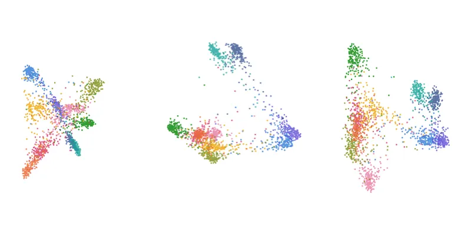
Which kernel gives modes that reproduce and a smooth row for a new image?
We chose participation ratio for a smooth row without the extreme pair localisation seen with Shannon; it did not win every stability test.
- 2.3% vs 9.3% peak two-image share (PR vs Shannon, P2)
- 94.2% peak two-image share (Shannon, P8)
- 253 vs 42 peak top-15 occurrence (raw vs PR)
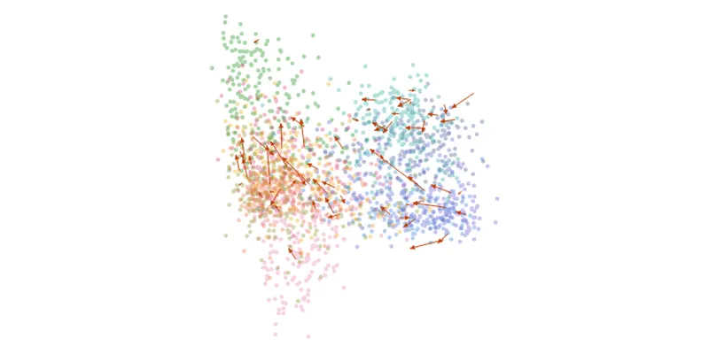
Can the joint coordinate be evaluated from just this site’s kernel row?
The joint formula needs other sites’ kernel rows; the source formula needs only this row.
- 13%–27% relative own-source weight (P8, conv sites)
- 0.419 → 0.015 b5 joint displacement, suppressing late source changes
- 7.21 max filter row gain (P2, K = 16)
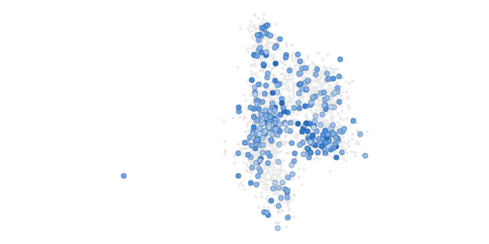
How much of an activation can K coordinates recover?
Given the clean trajectory, kernel ridge recovers activation direction better at pool than at b4, a much larger target.
- 0.51 b4 cosine (P8)
- 0.94 pool cosine (P8)
- 39% b4 top-1 agreement (P8)
- 0.50 b4 cosine (P2)
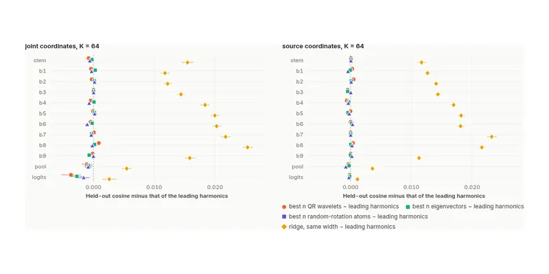
Do diffusion wavelets give a better or more interpretable inverse than harmonics?
Decoding the same 64 coordinates with the best-n diffusion wavelets instead of the leading-n harmonics (each at its own split-chosen n) changes held-out cosine by -0.004 to 0.001; kernel ridge stays ahead.
- Wavelets − harmonics: -0.004 to 0.001 cosine
- Ridge − harmonics: 0.001 to 0.025
- Band at A = 2: cosine 0.20–0.47 at stem–b8
- Eigenvectors hold more energy than wavelets at 11 of 12 sites
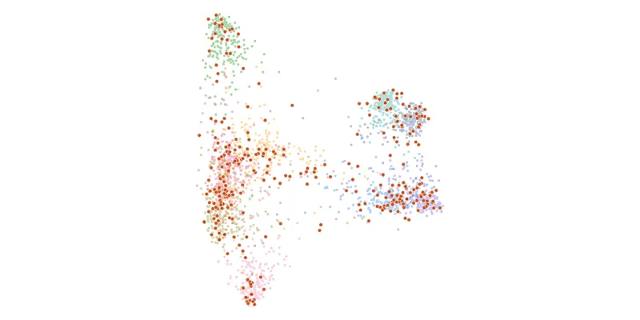
Where do other datasets, noisy and adversarial images land?
At b4, SVHN has higher reconstruction cosine and captured share than CIFAR-10, but patched agreement is similar.
- 0.687 vs 0.515 cosine (SVHN vs CIFAR-10)
- 0.477 vs 0.148 captured share
- 39.5% vs 38.7% patched top-1 agreement
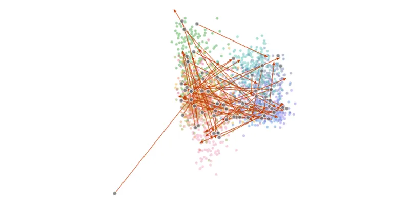
Can an activation be given another image's source coordinates, and does the output follow?
At b4, matching the donor’s source nearly exactly made the patched joint match slightly worse.
- 0.153 → 0.00000046 source miss
- 0.821 → 0.836 joint miss
- 0.418 → 0.430 donor probability (P8, K = 64)
Probing networks with the embedding (X1, X3, X4)
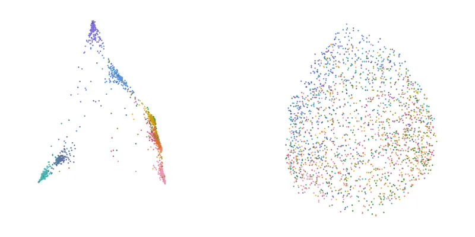
Does a network trained to reconstruct represent images like one trained to classify?
Reconstruction and classification already disagree at the stem. By b9, 0.88 of a classifier's neighbours share the image's class against 0.24 for an autoencoder, near the 0.22 of images that merely look alike as 4 × 4 thumbnails.
- 0.30 vs 0.76 shared neighbours at the stem (autoencoder × classifier vs classifier seeds)
- 0.05 vs 0.43 at b9
- 0.24 vs 0.88 label readout at b9
- 16.8 dB test PSNR, 10-number code (16.7 dB for rank-10 PCA)
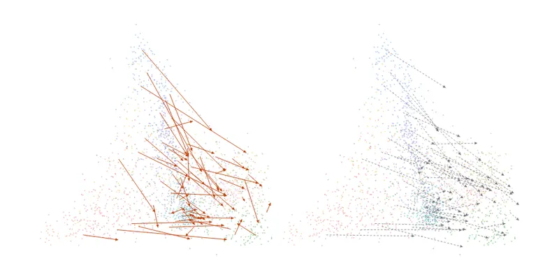
Where along depth does an adversarial image leave its class?
With untargeted PGD at 8/255, persistent class-mass leads span depth, and median Shannon displacement exceeds sign noise from b7 onward.
- b6 median persistent switch
- 2.61 vs 0.42 same-class units at b9
- 93.0% flip seed 1
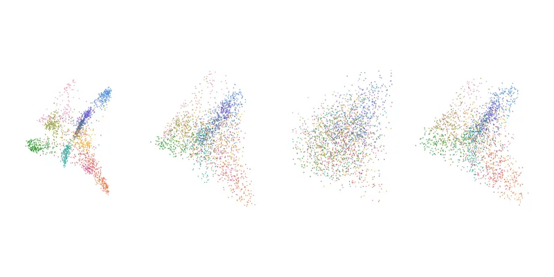
Do networks trained on other data embed the same probe alike?
Several natural-image pipelines gave similar embeddings on the same CIFAR-10 probe; SVHN was further away.
- 0.75 CIFAR-10 × CIFAR-100 at b9
- 0.80 CIFAR-10 × ImageNet-32 at b9
- 0.36 CIFAR-10 × SVHN at b9
- 0.95 CIFAR-10 run pairs at b9
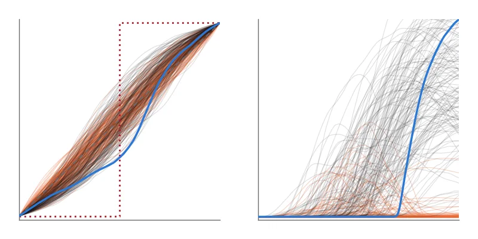
Do straight paths between two activations hit a wall downstream?
No wall in the activations: on 1,800 straight lines between two images’ activations, no recorded later site moved more than 20.7% of its distance in any sixteenth of the line. Class probabilities can still change sharply.
- 20.7% at most in any sixteenth (6.25% = even pace)
- 99.7% → 0.1% start-class probability within one sixteenth (steepest line drawn at b3)
- 27% of same-class lines drawn at b3 leave their class; 0 of 150 drawn at b8
Engineering note
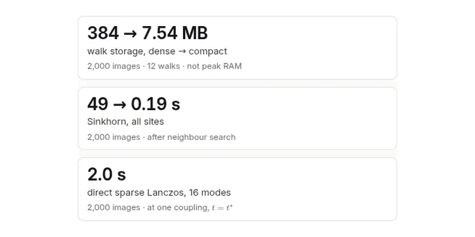
How far can the joint operator's solver scale?
An exact compact k-NN walk cut stored walk size and solver time at 2,000 images; larger runs are projections.
- 384 → 7.54 MB for 12 walks
- 49 → 0.19 s to balance walks
- 2.0 s for 16 joint modes
Does a network trained to reconstruct represent images like one trained to classify?
Tested: the classifiers' ResNet-20, trained on CIFAR-10 by the same code with the same recipe, either to predict the label (two classifiers, seeds 0 and 1) or to reconstruct its input through a decoder (four autoencoders: a 10-number or 64-number code, seeds 0 and 1). Within a seed, both kinds share the initialisation code, batch order and crops. Final checkpoints, measured on the viewer's probe of 2,000 CIFAR-10 test images.
No, and the difference is already there at the first measured site: an autoencoder and a classifier share 0.30 of each image's 15 nearest neighbours at the stem and 0.05 at b9, which is 0.40 and 0.12 of what two classifiers share at the same sites. Two autoencoders share 0.86 and 0.66. In the classifiers the share of an image's neighbours that have its class rises from 0.24 at the stem to 0.88 at b9; in the autoencoders it stays near 0.24 (random neighbours: 0.10), the level of images that look alike as 4 × 4 thumbnails. At b9, 0.35 of a 10-number autoencoder's neighbours are also its nearest thumbnails, against 0.05 for a classifier.
The gap, site by site
Two classifiers also agree less with depth, so a falling curve alone does not show that the objectives diverge. What matters is how far the autoencoder–classifier pairs sit below the classifier pair at the same site (autoencoders with the 10-number code):
| Shared neighbours | stem | b3 | b6 | b9 | pool |
|---|---|---|---|---|---|
| Two classifiers | 0.76 | 0.54 | 0.63 | 0.43 | 0.26 |
| Two autoencoders | 0.86 | 0.81 | 0.80 | 0.66 | 0.63 |
| Autoencoder × classifier, other seed | 0.30 | 0.18 | 0.11 | 0.05 | 0.04 |
| Autoencoder × classifier, same seed | 0.30 | 0.18 | 0.11 | 0.05 | 0.04 |
| Gap: two classifiers − other seed | 0.46 | 0.36 | 0.51 | 0.38 | 0.22 |
| Ratio: other seed ÷ two classifiers | 0.40 | 0.34 | 0.18 | 0.12 | 0.14 |
The gap is large at every site and does not grow steadily (it is largest at b6); the ratio falls from 0.40 at the stem to 0.12 at b9. In these two seeds, matching the seed scarcely changed the mean overlap: same-seed and other-seed pairs differ by at most 0.0011 at the five sites above and 0.0016 at any site. Matching the seed also matches batches and crops, so this is not a test of shared weights alone. For scale, an untrained network shares 0.27 of the neighbours with a classifier at the stem, about as much as an autoencoder does, but 0.56 with an autoencoder: the autoencoders' stem retained more of the untrained networks' neighbours. The 64-number autoencoders give the same picture (other-seed ratio 0.37 at the stem, 0.14 at b9; figure under “More figures”).
What the autoencoders group by
A classifier's neighbourhoods fill up with the image's own class, from 0.24 at the stem to 0.88 at b9. The autoencoders' stay between 0.23 and 0.25 at every site: above random (0.10), at about the class purity of images that look alike at 4 × 4 pixels. This is a property of the neighbourhoods, not a classification accuracy: it does not show that the label cannot be read from the autoencoders' activations, only that an image's nearest images are not mostly of its class.
The autoencoders' neighbours lean towards coarse appearance. In the 10-number autoencoders 0.60 of an image's neighbours are also among its nearest thumbnails at the stem, 0.60 at b3 and 0.35 at b9; in the classifiers the share starts at 0.21 and falls to 0.05. This is a preference, not an account of every neighbour: most of an autoencoder's b9 neighbours are not nearest thumbnails.
What the autoencoders keep
The first probe image of each class, and its reconstruction
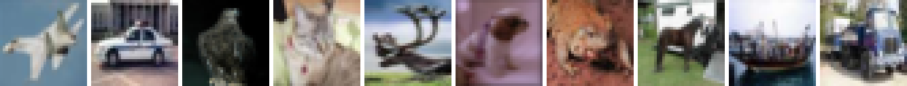
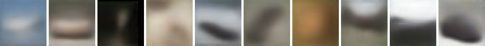
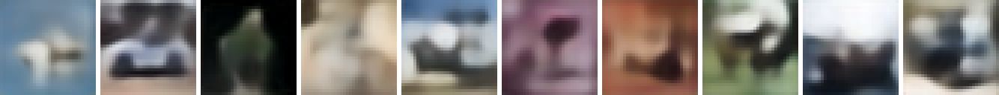
These are weak autoencoders. Test PSNR (peak signal-to-noise ratio of the reconstruction; higher is better) is 16.8 dB with a 10-number code and 21.2 dB with 64 numbers. That is barely above principal component analysis of the same rank (16.7 and 20.8 dB) and well above outputting the mean training image (12.1 dB). PCA is a reference, not a target: it is a linear map of the pixels themselves, positions included, while the code passes through a pool that averages positions away. In these examples the 10-number code keeps the colour layout (sky, ground, a dark or bright blob where the object is) and little shape; 64 numbers add rough outlines.
| Test PSNR, dB | seed 0 | seed 1 | PCA, same rank |
|---|---|---|---|
| 10-number code | 16.8 | 16.9 | 16.7 |
| 64-number code | 21.2 | 21.2 | 20.8 |
Pictures of the probe at b9 and the stem
At b9 the classifier's map separates the classes, while the autoencoder's mixes them. At the stem both maps mix the classes; in both, airplanes and ships lie toward one side and deer and frogs toward another.
The same probe on the classifier's axes (joint coordinates)
As a separate held-out check, with joint coordinates fitted on the stem to b9 only, the held-out cosine at b9 is 0.32 for other-seed autoencoder–classifier pairs against 0.95 for the classifier seeds; on the full 12-site chain it is 0.28 against 0.96. The output sites are not what separates the two kinds.
The two networks
autoencoder: a decoder redraws the image; squared error to the input
Within each seed, both kinds were built by the same initialisation code and trained on the same batch order with the same crops and flips, under the classifier's optimiser settings (SGD, learning rate 0.1, 64,000 steps). Before training, a fresh same-seed classifier build matched the 10-number autoencoder's network tensor by tensor (116 tensors, last layer included) and the 64-number one's through the trunk (114 tensors; its last layer is new); both also matched the zoo's step-0 checkpoints. The retrained classifiers' own starting states were not saved. Pairs of different seeds, which carry the headline, share neither starting weights nor batch order.
What differs is what follows the last layer. The autoencoder's decoder (433,955 parameters, against 269,722 in the ResNet) must redraw the crop it was given from the code alone. The code is computed from b9 averaged over image positions, so where things are survives only as far as the channels themselves encode it; the decoder has to rebuild the layout from 10 or 64 numbers.
The last layer is shown apart in the figures. The decoder starts with a linear layer, which can absorb any invertible linear change of the code, so the code's geometry is not fixed by the objective and comparing it with a classifier's logits says little.
What was computed
| Quantity | Definition | Symbols and choices | Code |
|---|---|---|---|
| Neighbours | $N_{A,l}(i)=\operatorname{top15}_{j\ne i}\ \langle \hat a_{l,i},\hat a_{l,j}\rangle,\quad \hat a=\dfrac{a-\bar a}{\lVert a-\bar a\rVert}$ | $a_{l,i}$: network A's flattened activations at site $l$ for probe image $i$; $\bar a$: their mean over the probe. Centred cosine ignores each activation's length. The same neighbour lists build the viewer's walks. | xp/modal_xp.py:embedxp/xlib.py:probe_gram |
| Neighbour overlap | $\mathrm{ov}_l(A,B)=\dfrac{1}{15N}\sum_i \lvert N_{A,l}(i)\cap N_{B,l}(i)\rvert$ | $N$ = 2,000; same site $l$ in both networks; chance $15/(N-1)$ = 0.0075. A line for several pairs is their mean, shaded from the lowest to the highest pair (two or four pairs; a range, not a confidence interval). One shuffle of B's images gives 0.007 at b9. | xp/stage_compare.py:run (nn), recomputed in site/xsite/gen_ae.py |
| Gap and ratio | $\mathrm{ov}_l(C,C')-\mathrm{ov}_l(\mathrm{AE},C'),\quad \mathrm{ov}_l(\mathrm{AE},C')\,/\,\mathrm{ov}_l(C,C')$ | $\mathrm{ov}_l(\mathrm{AE},C')$: mean over the two autoencoder–classifier pairs with different seeds; $\mathrm{ov}_l(C,C')$: the classifier seed pair; same site. | site/xsite/gen_ae.py |
| Label readout | $\dfrac{1}{15N}\sum_i\sum_{j\in N_{A,l}(i)}[\,y_j=y_i\,]$ | $y$: true class. Purity of one network's neighbourhoods, not classification accuracy. Random neighbours give $\frac1N\sum_i (n_{y_i}-1)/(N-1)$ = 0.10, with $n_c$ the probe images of class $c$. | xp/stage_compare.py:run (readout) |
| Thumbnail readout | $\dfrac{1}{15N}\sum_i \lvert N_{A,l}(i)\cap T(i)\rvert$ | $T(i)$: the 15 nearest probe images to $i$ by centred cosine of their thumbnails $t$, where $t_i$ is image $i$ (pixels in [0, 1]) averaged over 8 × 8-pixel blocks in each colour channel, 48 numbers. | site/xsite/gen_ae.py:thumbnails, centred_knn |
| Reconstruction PSNR | $-10\log_{10}\dfrac{1}{M\cdot 3\cdot 32^2}\sum\big(\operatorname{clip}(\hat x)-x\big)^2$ | Pixels in [0, 1]; $M$ = 10,000 CIFAR-10 test images, unaugmented. PCA: the best rank-$d$ linear reconstruction, fitted on the 50,000 training images. Mean image: the training mean as the output for every image. | xp/modal_train.py:train |
Caveats
- More changed than the loss. The comparison is class prediction against reconstruction of the augmented crop through a learned decoder behind a pooled bottleneck. The 64-number code is a check on the code's width, not a test of whether the loss or the bottleneck causes the difference.
- Weak autoencoders. They barely beat PCA. A stronger one, for example with a decoder that reads b9 before pooling, might organise its trunk differently.
- Two seeds of each kind. Bands are ranges over two or four pairs, or over two networks; permutation references are single draws; nothing here is a significance test.
- One probe, one architecture, one checkpoint. 2,000 CIFAR-10 test images, ResNet-20, final weights only.
- One notion of neighbour. 15 nearest by centred cosine, which discards the length of each activation; other neighbourhood sizes and distances were not tried.
- The label readout is not a probe. Low purity does not mean the class cannot be decoded from the autoencoders' activations.
Decisions made on the owner's behalf (9)
| # | Decision | Chosen | Alternative | Why |
|---|---|---|---|---|
| 1 | Kind of autoencoder | Plain, deterministic, squared error | Denoising, masked or variational | Changes only the loss and what follows the last layer |
| 2 | Code width | 10 (the classifier's last-layer width) and 64 (the pool's width) | One width, or a sweep | The narrow code is the obvious confound; 64 removes the narrowing after pool |
| 3 | Bottleneck | The decoder reads only the last layer, computed from pool | A decoder reading b9's spatial map | Sites through pool have matching shapes and positions in both kinds; whether pooling caused the weak reconstructions was not tested |
| 4 | Optimiser | The classifier's SGD: momentum 0.9, weight decay 10−4, batch 128, 64,000 steps, learning rate 0.1 divided by 10 at 50% and 75% | Adam, or a schedule tuned for reconstruction | No optimiser confound. A pilot (8,000 steps, 5,000 training images held out) gave held-out error 0.364 at rate 0.1, 0.370 at 0.03 and 0.380 at 0.01; the rule fixed in advance kept 0.1 unless another rate was more than 5% lower |
| 5 | Target | The augmented, normalised crop the encoder saw | The unaugmented image | Reconstruct exactly the input |
| 6 | Seeds | Same initialisation code, seed, batch order and augmentation as the classifier of the same seed | Independent runs | Lets same-seed pairs show whether a shared start (weights, batches and crops together) matters |
| 7 | Checkpoint | Final only | Follow the divergence through training | Budget; as for the other networks in the viewer |
| 8 | Thumbnail readout | 4 × 4 block means, centred cosine, 15 nearest | Full-resolution pixels, other block sizes | Coarse appearance without detail; chosen when writing this page |
| 9 | Pictures | Site-local coordinates at matched sites, with the joint view on the classifier's axes as a second figure | Joint coordinates only | Joint coordinates are fitted over all sites, so a picture of them at b9 cannot locate where networks differ |
Checks, reported as measured. Before the full runs, one fixed batch of 128 images was fitted from squared error 1.19 to 0.010 in normalised pixel units. After training, eight test images reconstructed one at a time and inside a batch of 256 differed by at most 0.0034 in normalised output units (largest of the four autoencoders); the smallest standard deviation of any code coordinate over the test images is 0.05; and the saved reconstructions of all 2,000 probe images score 16.9 dB (10-number code) and 21.2 dB (64-number code), seed 0. The two classifiers reach 91.4% and 91.7% test accuracy. See the specification and its revisions after review.
More figures (5)
Open these networks in the Viewer at b9 · Specification · Comparison code · Page generator · At a glance
Where along depth does an adversarial image leave its class?
Tested: Final CIFAR-10 ResNet-20 checkpoints. Seed 0 was attacked; seed 1 was used for transfer. The 1,000 test images are outside the 2,000-image probe and both seeds classify them correctly when clean. The embedding uses the archived seed 0 inputs. The kernel check reuses the clean identities and targets but regenerates perturbations.
For the untargeted attack at 8/255, the median first persistent destination-over-true lead was at b6, but leads started across depth. Under Shannon, median attack displacement was close to sign-noise displacement at b6 (0.56 vs 0.56 same-class units) and pulled away at b7 (0.68 vs 0.46).
What was computed
| Quantity | Definition | Symbols and choices | Code |
|---|---|---|---|
| Attack and sign noise | $x^{+}=\Pi_{B_\varepsilon(x)\cap[0,1]^d}(x' + \alpha\,\mathrm{sign}\nabla_{x'}J)$ $x_{\rm noise}=\mathrm{clip}_{[0,1]}(x+\varepsilon\,\eta)$ |
Projected gradient descent (PGD): start at $x+U[-\varepsilon,\varepsilon]$ per pixel, then clip. Take 50 steps of size $\alpha=2.5\varepsilon/50$ in the $L^\infty$ box. Maximise cross-entropy for the true label $y$ (1, 2, 4, 8 over 255), or its negative for target $(y+r)\bmod 10$ (8/255; $r$ uniform in 1 through 9). Noise uses independent random signs $\eta$, then clips. Success means a label change or, for the targeted attack, a target hit. | xp/stage_x3.py:runxp/analyze_x3.py:main |
| Probe walks | $d_{ij}=1-\hat a_i^\top\hat a_j$ $q(j\mid i)\propto e^{-\beta_i d_{ij}}$ $\exp[-\sum_j q(j\mid i)\log q(j\mid i)]=100$ $P=\mathrm{diag}(v)W\mathrm{diag}(v)$ |
At each site, flatten activations, subtract the probe mean and normalise each row to get $\hat a_i$. Shannon sets each width using the conditional distribution over other probe images, not the final walk. $W$ averages the two directed conditionals. For k-NN, $W$ is 1 on the union of 15-neighbour edges and $10^{-6}$ on non-edges. Both zero the diagonal and use symmetric Sinkhorn scaling $v$ to give row and column sums of 1. | xp/xlib.py:probe_gramxp/dm.py:ea_kernel, knn_kernel, sinkhorn_sym |
| Joint operator | $M_l=(I+P_l)/2$ $c_l=\mathrm{mean}_{r=1}^{8}(1-\lambda_r(M_l))$ $H_l=(I-M_l)/c_l$ $\mathcal L_t=H+tD$ |
$H$ is block-diagonal in sites; $D$ is the free-end path Laplacian acting along depth. Use the smallest eigenpairs $(\mu_k,f^{(k)})$ on functions with zero mean at each site. $c_l$ excludes the constant mode. Use the first $t$ for which $H+t(D-\tau I)$ is singular on that subspace, with $\tau=4\sin^2(\pi/(2L))$ for $L$ sites. Fit separately by seed and kernel on the same probe. | xp/xlib.py:fit_opspacetime.py:modes, balance_direct |
| Row for a new image | $p_l(x)_j\propto v_j[q(j\mid x)+\tilde q(x\mid j)]$ $p_l^{\rm kNN}(x)_j\propto v_jw(x,j)$ |
Centre and normalise $x$'s activation with the same probe mean and form its cosine distances to the probe. For Shannon, calibrate $x$'s own conditional and evaluate the reverse term with $j$'s frozen width and normaliser. For k-NN, $w=1$ if $j$ is in $x$'s 15 nearest or $x$ is within $j$'s 15th-neighbour radius; $10^{-6}$ otherwise. Normalise the row, without adding $x$ to the probe. | xp/xlib.py:cross_cos, ea_rows_t, knn_rows_t |
| Site-local, source and joint coordinates | $z_{l,r}=p_l\phi_{l,r}/\lambda_{l,r}$ $s_{l,k}=p_l f_l^{(k)}$ $T_k y_{\cdot,k}=s_{\cdot,k}/(2c)$ |
$\phi,\lambda$ are the leading nonconstant eigenpairs of the non-lazy walk $P_l$; $z$ is the Nyström extension of its own modes. A source coordinate uses just this site's row, applied to a joint mode. Joint extension solves along depth: $T_k$ has diagonal $1/(2c_l)+t\deg_l-\mu_k$ and adjacent entries $-t$. On the probe, $z=\phi$, $s=P_l f_l$, $y=f$. | xp/xlib.py:fit_op, Ext.site, Ext.solve |
| Displacement and activation change | $\Delta_l=\lVert z_l(x')-z_l(x)\rVert_2/u_l$ $\lVert a'-a\rVert_2/\lVert a-\bar a\rVert_2$ $\cos(a'-\bar a,a-\bar a)$ |
$u_l$ is the median clean distance of the distinct same-class pairs kept from 40,000 uniformly drawn index pairs (seed 0). No diffusion-time weights on the 16 coordinates. Activation checks use the raw flattened activations $a,a'$ and the probe mean $\bar a$. The relative norm denominator is floored at $10^{-12}$. | xp/analyze_x3.py:mainxp/stage_x3.py:run |
| Class mass and switch site | $m_l(c)=\sum_{j:y_j=c}p_l(x)_j$ $\min\{l:\forall l'\ge l,\ m_{l'}(d)>m_{l'}(s)\}$ |
$s$ is the true class and $d$ is the final prediction of the measured seed. An alternative rule requires $m_{l'}(d)\ge\max_c m_{l'}(c)-10^{-12}$ at all later sites, including the chosen site. Both count “never” if there is no such site. Switch histograms condition on success or use held-out natural errors. | xp/xlib.py:Ext.sitexp/analyze_x3.py:switch_site, main |
| Transfer to seed 1 | $\Pr(\hat y_1\ne y\mid A_0)$ $\Pr(\hat y_1=\hat y_0\mid A_0)$ |
The inputs crafted on seed 0 are reused unchanged. $A_0$ is attack success on seed 0. For the displacement split on seed 1, group by any label flip there, not by agreement with seed 0's destination. | xp/stage_x3.py:runxp/analyze_x3.py:main |
| Arrival (appendix) | $\#\{i:y_i=d,\ D_i<D'\}/\#\{i:y_i=d\}$ | $D'$ is a successful attack's distance to the final class's probe centroid. $D_i$ uses the same centroid and the clean held-out cohort of that class (more than 10 members). Computed in site-local and joint coordinates; a joint percentile cannot date arrival. | xp/analyze_x3.py:main, pct |
Supporting figures
Does the result depend on the kernel?
Caveats
- audit Joint coordinates mix sites. Replacing only the logits row gives 4.2% of the full attack's median joint displacement at stem and 13.9% at b9 (Shannon, first 16 modes, rather than all fitted modes as in the appendix). Earlier site-local readouts change by 0.
- audit Equal $L^\infty$ budgets do not match $L^2$ size. The median centred-activation cosine already differs at b6 (0.64 attack vs 0.77 noise). No $L^2$-matched noise control was run.
- Some walk modes concentrate on very few images. The archived Shannon maximum is 82.8% on two probe images (b5, walk mode 11). The matched regenerated cohort gives 82.85% with Shannon and 6.25% with participation ratio. The late displacement gap and median switch site survive the kernel change, but agreement per image is weaker (paired rates below). Changing the kernel changes row weights as well as mode localisation.
- The archived attacks did not regenerate bit-for-bit. At 8/255, seed 0's final prediction matched the archive on 74.9% of untargeted attacks and 88.9% of noise inputs. Only 19.5% of rounded attack pixel-channel values matched. All kernels in the new comparison use the same regenerated inputs.
- audit A switch is a rule on class mass, not a boundary crossing. The stricter highest-mass rule moves the median to b7. 128 of 1,000 archived successes already have a persistent lead at the stem (median stem lead 0.113); no preceding true-class lead is required. For 13% of natural errors there is no persistent lead.
- One architecture, two training seeds, one probe. No bandwidth sweep, fresh probe or additional architecture in the original X3 run.
Method concerns from the audit
- audit Interpretation limit: Final prediction, success and persistence use later information. The switch site therefore dates a retrospective readout, not when an attack takes effect. Require an earlier true-class lead or a minimum lead as sensitivity checks.
- Control mismatch: Rounded attacks had median pixel $L^2$ 1.31; under the clipped sign-noise rule, the median per-image RMS $L^2$ is 1.74 (not a measured noise median). Match $L^2$ per image and report paired differences or intervals near b6–b7; similar group medians do not establish equivalence or an onset.
- Interpretation limit: A kernel-row switch does not define a kernel-independent event for an image. Compare paired switches at matched realised row widths; see the shared row and numerical checks.
Decisions made on the owner's behalf (10)
| # | Decision | Chosen | Alternative | Why | Risk | Check |
|---|---|---|---|---|---|---|
| 1 | Kernel and width | Shannon 100, not tuned | Participation ratio; bandwidth sweep | Smooth rows; middle of the earlier candidate widths | Some walk modes concentrate on very few images | Switch mode is b7 for Shannon and b7 for k-NN; total variation is 5%. Match final effective widths in a sweep. |
| 2 | Reference graph | Freeze the clean probe | Add perturbed images and refit | Clean and attacked copies would become neighbours and could reshape the graph | The fixed graph may poorly represent atypical inputs | Check nearest-probe cosine, as in the appendix; repeat on a fresh probe. |
| 3 | Dating an effect | Use site-local readouts; use joint coordinates for pictures and retrospective arrival | Date from joint displacement | Joint coordinates include rows from later sites | Site-local axes differ by site | Replace only the logits row and check both kinds. |
| 4 | Distance unit | Median clean same-class distance; unweighted modes | Weight by diffusion time; change the mode count | Compare to within-class spread at each site | Units vary by site; a localised low or high mode counts equally | Recompute with other mode weights and counts. |
| 5 | Noise control | Same $L^\infty$ budget | Match per-image $L^2$ norms | Match the constraint used by PGD | Different perturbation sizes and directions | Test $L^2$-matched draws. |
| 6 | Cohorts | First eligible test images; all attempts enter displacement and success rates | Random eligible sample or successes-only displacement | Fixed list and denominator, no selection on displacement | Restricts inference to images that both seeds get right; successes-only charts answer a different question | PGD 8/255 succeeded on 100%; repeat with a fresh cohort and retain failures. |
| 7 | Transfer | Split displacement by any seed 1 flip | Require the same destination | Distinguish a changed prediction from destination agreement | A flip can be to a different class | Untargeted 8/255: same class 91.4%. Targeted 8/255: seed 0 hits 100%; seed 1 flips 43.5% and hits the same target 36.5%. |
| 8 | Centroid | Probe-only mean by class | Include the scored clean images | Keep test images out of the centroid | Distance to the mean ignores class shape | Use per-class held-out distance ranks; compare to a local-density readout. |
| 9 | Stem switches | Count them | Require an earlier true-class lead | Apply a fixed rule to every trajectory | The first site can qualify without any observed transition | Compare with the highest-mass rule and test a minimum lead margin. |
| 10 | Smooth kernel rule | Shannon perplexity 100 | Participation ratio 100: set $1/\sum_j q(j\mid i)^2=100$ before symmetrising | Shannon was chosen before the inversion experiment found its concentrated modes | Concentrated walk modes can distort distances; kernel widths also change distance scale and class masses | Tested on one matched regenerated cohort with both rules and k-NN. The comparison changes the kernel rule, not just the width. |
For the depth solve, the archived seed-0 maximum condition numbers over the first 16 modes were 35.9 (Shannon) and 22.3 (k-NN). The recorded maximum absolute joint-coordinate error on masked probe replay of the full fits was about 7.1e-09. This checks these fits, not arbitrary modes or chains.
Original setup and audit changes: specification · findings.
More figures and kernel-check values (7 figures)
| Measure | Shannon 100 | Participation ratio 100 |
|---|---|---|
| Attack ÷ noise at b6, b7, b8, b9 | 0.989, 1.497, 2.782, 6.259 | 0.991, 1.403, 2.468, 5.113 |
| Switch median and mode, beats true class | b6, b7 | b6, b7 |
| Switch median and mode, highest mass | b7, b7 | b7, b7 |
| Mean final-class mass, pool and logits | 96.4%, 96.6% | 92.5%, 94.7% |
| Largest two-image share, joint and walk modes | 14.28%, 82.85% | 3.19%, 6.25% |
Switch histogram total variation between Shannon 100 and participation ratio 100: 4.7% for the true-class rule and 5.7% for the highest-mass rule. Under the final-over-true rule the median is b6 for all three kernels. Yet Shannon and participation ratio give different sites for 26.8% of paired images (8.5% differ by two or more bins); Shannon vs k-NN gives 49.4% (20.9%). “Never” is the last bin.
No Shannon modes exceeded the 10% two-image threshold at b7 or b8. Dropping 3 modes at b6 changed the ratio from 0.989 to 0.979; dropping 1 at b9 changed it from 6.259 to 6.863. The common clean-distance unit cancels in the ratio, but not in individual distances.
The largest difference between archived and regenerated Shannon median distances at any site is 0.022 for attack and 0.029 for noise, in same-class units.
Full X3 report · Placing new images · Run code · Analysis code · At a glance
Which kernel gives modes that reproduce and a smooth row for a new image?
Tested: Final CIFAR-10 ResNet-20, seed 0. P2 takes 200 test images per true class; P8 adds 6,000 random remaining images. H is the sorted remainder (2,000 images).
We chose participation ratio for a smooth row without the extreme pair localisation seen with Shannon on P8. It did not win every stability test, and the walks had different effective widths.
These entries distinguish estimating an activation from an observed whole trajectory (Decode), recovering what one site holds (Sources and the source strip in Decode), and finding an intervention with a desired output (Edits).
What was computed
| Quantity | Definition | Symbols and choices | Code |
|---|---|---|---|
| Cosine distance | $d_{ij}=1-\hat x_i^\top\hat x_j$ | At each site, flatten activations, subtract the probe mean and normalise each row. New images use that same mean. | modal_invert.py:gram |
| Union k-NN | $W_{ij}=1$ if $j\in\mathrm{NN}_{15}(i)$ or $i\in\mathrm{NN}_{15}(j)$; $10^{-6}$ otherwise, except $W_{ii}=0$. | Neighbours by cosine distance. The hard inclusion threshold can change the row abruptly. | dm.py:knn_kernel |
| Per-image widths | $q_{ij}\propto\exp[-\beta_i(d_{ij}-d_{i,\min})]$, $q_{ii}=0$. Shannon: $-\sum_j q_{ij}\log q_{ij}=\log 300$. Rényi-2: $1/\sum_j q_{ij}^2=300$. | Bracket each inverse width $\beta_i$ by doubling, then bisect. Set $W=(q+q^\top)/2$. PR gives $q_{ij}\le 1/\sqrt{300}$ before balancing (the average of two such probe conditionals also obeys the same bound). PR does not bound the final walk or a new image's final row. | dm.py:_cond_rows, ea_kernel |
| Balanced walk and width | $v_i(Wv)_i=1$, $P=\operatorname{diag}(v)W\operatorname{diag}(v)$ $\text{width}=\exp[-N^{-1}\sum_{ij}P_{ij}\log P_{ij}]$ | Symmetric Sinkhorn, then average $P$ with its transpose. Width is the geometric mean of row Shannon perplexities after balancing (with $0\log0=0$), not the width parameter. | dm.py:sinkhorn_sym, perplexity |
| Row for a new image | $p_j(x)\propto v_j\,{\tilde W}(x,j)$ | For k-NN, a unit edge if $j$ is among $x$'s 15 nearest or $d(x,j)$ is no more than $j$'s stored 15th distance; otherwise the floor. For per-image widths, average $x$'s recalibrated conditional and $j$'s frozen formula (including its old normaliser), then normalise in the log domain. Mask a probe image's own entry to replay its row (for k-NN, assuming no ties at the cutoff). | dm.py:knn_oos_rows, ea_oos_rows |
| Joint modes | $M_l=(I+P_l)/2$, $c_l=\frac18\sum_{r=1}^{8}(1-\lambda_r(M_l))$, $H_l=(I-M_l)/c_l$ $\mathcal L_t=\operatorname{blockdiag}(H_l)+tD_{\rm path}\otimes I$ | $\lambda_0=1$ is the constant; $D_{\rm path}$ is the path Laplacian over sites. Take the lowest eigenpairs on functions with zero mean at every site; normalise over all sites and images. Use the first $t=t^*$ for which $\mathcal L_t-t\,4\sin^2(\pi/2L)I$ is singular on that subspace. The lowest slice-mean-zero eigenvalue then meets the first nonconstant slice-constant one. | dm.py:joint_modes; spacetime.py:balance_direct, modes |
| Two-image share | $w_i=\sum_l f_l(i)^2$, $\text{share}=(w_{(1)}+w_{(2)})/\sum_i w_i$ | $w_{(1)},w_{(2)}$ are the two largest image weights of one joint mode. | modeloc.py |
| Half-split reproducibility | $e=\operatorname{unit}(\operatorname{centre}(P_{B\leftarrow A}\phi_{A,k}))$ $\dfrac{\|\Phi_{B,1:m}^\top e\|^2-m/(|B|-1)}{1-m/(|B|-1)}$ | Fit a walk on each disjoint half and use one out-of-sample step from A. Project into B's first $m=2k+10$ nonconstant walk modes ($k=16$ here). This is a site-local subspace score, not a joint-mode score or a mode-to-mode cosine. | p0_kernel.py:stability |
Supporting figures
Caveats
- In the larger Shannon run, 46 of the first 64 joint modes exceeded 10% two-image share. The two images in a localised mode are not necessarily duplicates; the experiment did not establish the mechanism.
- Held-out joint refit (Shannon 300 vs PR 300): K = 16 scores were 0.961–0.997 vs 0.935–0.986; Shannon led at all 12 sites. At K = 64: 0.646–0.959 vs 0.780–0.918. The run refits on P2+H with doubled targets and aligns sample-size-rescaled coordinates by one orthogonal map fitted on P2 across sites. The score is one minus squared error relative to refit energy; it includes refit drift, not just extension error.
- In the local split, PR beat Shannon at 11 of 12 sites (not b9). The unplotted global-width comparison beat PR at 7 sites.
Method concerns from the audit
- audit Limit — one shared-centre, fixed-target split. A and B share the full-P2 centring mean; half-size walks keep the absolute target while the plotted widths come from full P2. Repeat in both directions with independent fit centres, training-centred cross rows and measured half-walk widths.
- audit Limit — localisation depends on the basis. In a nearly degenerate eigenspace, individual modes can rotate. Check localisation of the whole subspace using image leverage.
- audit Possible flaw — probe and query rows differ. Masked replay checks the fitted convention only: a new near-copy is unmasked, and the frozen reverse affinity with its old normaliser can exceed one. Test modified affinities separately from masked replay.
Decisions made on the owner's behalf (4)
| Decision | Chosen | Alternative | Why | What it could bias | How to test |
|---|---|---|---|---|---|
| Kernel rule | Participation ratio for inversion | Shannon, hard k-NN, global width | Limits concentration of each calibrated conditional without a hard neighbour threshold. | Observed stability could be due to width. | Match final walk widths, then repeat stability and localisation tests. |
| Width target | PR 300 on P2, PR 400 on P8 as primary settings | Dense width sweep | Only a few settings were run within the budget. | Conclusions may be specific to the chosen widths. | Vary width at both probe sizes. |
| Diagonal | Zero | Include self loops in kernel fitting | Exclude self when fitting neighbourhoods among distinct probe indices; mask that index only for replay. New images are unmasked. | Near-identical held-out points can overshoot. | Stratify by the largest out-of-sample row weight. |
| Coupling and uncertainty | Balance coupling for each fitted walk; one split | Vary coupling and repeat across splits and probe draws | Use the existing balance rule; time limited the number of repeats. | Localisation could depend on coupling; stability has unknown draw-to-draw variance. | Repeat the comparison across splits, coupling values and seeds. |
More figures (2)
Full inversion report · Placing new images · Run code · At a glance
Can the joint coordinate be evaluated from just this site’s kernel row?
Tested: Final CIFAR-10 ResNet-20, seed 0. The attack uses the P2 participation-ratio 300 operator. The filter-weight and patch comparisons also show results for the larger P8 participation-ratio 400 operator.
The joint formula generally needs the other sites’ kernel rows; the source formula needs only this site’s row. That is a property of the readout, not proof of what can be inferred from an activation.
What was computed
| Quantity | Definition | Symbols and choices | Code |
|---|---|---|---|
| Source coordinate | $s_{l,k}(x)=\sum_i p_l(x_l,i)f^{(k)}_l(i)$ On the probe: $s_{l,k}=P_lf_l^{(k)}$. | $f^{(k)}$ is one joint mode fit on the probe, and $p_l$ is the new image's balanced row from its activation $x_l$. Source coordinates use only that row at inference; their basis was fit jointly. | modal_invert.py:joint, stage_rt.py:run (FS) |
| Depth filter | $T_k=\operatorname{diag}((2c_l)^{-1}+t\deg_l-\mu_k)-tA_{\rm path}$ $y_{\cdot,k}=T_k^{-1}(s_{\cdot,k}/(2c))$ | $\mu_k$ is the joint eigenvalue, $c_l$ the local scale, $t$ the coupling. $A_{\rm path}$ links consecutive sites, with degrees $(1,2,\ldots,2,1)$. Divide each source by its own $2c_l$ before solving. This filter is fixed by the operator. | dm.py:joint_forward |
| Own-source share | $w_{lm,k}=|[T_k^{-1}]_{lm}|/(2c_m)$ $\mathrm{share}_{l,k}=w_{ll,k}/\sum_m w_{lm,k}$ | At site $l$, take the diagonal coefficient's share of the absolute row weight. Average ratios over the first $K$ modes. This is not a share of observed variance or a regression coefficient. | stage_rt.py:run (E1|share_ll) |
| Source-on-joint slope | $\hat\beta_{l,k}=\sum_i s_{l,k}(i)y_{l,k}(i)/\sum_i y_{l,k}(i)^2$ | Through-origin fit from joint to source, separately per mode over the first 256 rows of sorted H (the edit cohort), then averaged across modes. No patch or new forward pass. | stage_rt.py:run (E1|slope) |
| Patched-run progress | $d=(y_b-y_a)/\sigma$, $\mathrm{prog}_D=\langle(y'-y_a)/\sigma,d\rangle/\|d\|^2$ | At the patched site, project the displacement toward target image b, relative to clean held-out per-mode spread $\sigma$. To compute $y'$, use image a's prefix, the edited activation at the patch, and the recomputed suffix, then apply the filter. Average over pairs with different original network predictions. | stage_rt.py:run (FD, progress) |
| Attack displacement | $\operatorname{mean}_{i,k}\big[((u^{\rm adv}_{l,k}(i)-u^{\rm clean}_{l,k}(i))/\sigma_{l,k})^2\big]$ | $u$ is joint or source. Standardise by the population standard deviation of the clean coordinates over the cohort, separately for each site, mode and kind. The reference value 2 applies to independent population-standardised draws or draws with replacement from this empirical reference. PGD uses the first 1,000 rows of sorted H, including examples misclassified on clean or attacked input. | adv.py; cutoff check in gen_inv_a.py |
Supporting figures
Caveats
- Audit: The source-on-joint slope uses held-out H, not probe images, and is distinct from progress under a patch. The pilot's swaps with other sources held fixed are also distinct from the plotted patch runs, which recompute the suffix.
- Audit: The source-coordinate class readout in the full attack report uses centroids from the second half of H; the joint readout uses probe centroids. No class readout enters the displacement calculation here.
- The late-source cutoff changes a fixed readout, not a network run. At b5 the complete joint and source displacements were 0.419 and 0.095 in their respective spread units.
Method concerns from the audit
- audit Limit — the stem is a counterexample to non-identifiability. Its activation determines the whole suffix, and there is no prefix in this operator. An interior site determines its suffix too; testing what the prefix adds requires comparing valid trajectories, not zeroing source changes in the filter.
- audit Possible flaw — gain matters as well as relative weight. At K = 16 / 64 / 256 on P2, maximum $\kappa_2(T_k)$ is 147 / 349 / 842; maximum absolute row sum of $F_k=T_k^{-1}\operatorname{diag}(1/(2c))$ is 7.21 / 17.83 / 43.88. This is not a convex average. All fitted modes were solved; the spec had envisaged excluding ill-conditioned modes. Test sensitivity to dropping high-gain modes; these gains alone do not show numerical failure.
- audit Limit — a local source loses scale. Centred positive radial rescaling leaves the cosine row unchanged. A source match is not an activation match; test recovery with and without independent norm information.
Decisions made on the owner's behalf (4)
| Decision | Chosen | Alternative | Why | What it could bias | How to test |
|---|---|---|---|---|---|
| Single-site inverse | Match the source coordinate | Hold other sources fixed and match the joint coordinate | The source is a function of one activation. | Matching a source need not move the patched joint coordinate to the target. | Compare fixed-source filtering with patched forward passes. |
| Attack configuration | PGD, 20 steps of ε/4 | Use the longer X3 attack | Limit compute. | The depth pattern may depend on attack strength. | Keep the operator and cohort fixed and vary the attack budget. |
| Patch comparison | Natural edit sizes and equal-size isotropic controls for individual edits | Compare all methods at the same budget | Measure the edits each method proposes. | Progress can reflect size as well as direction. | Compare curves at equal activation-edit norms. |
| Probe in figures | P2 PR 300 for the interactive cloud; P8 PR 400 as an additional numerical check | Ship the full P8 cloud | Use the same probe images as the viewer and ship less data. | The P2 picture does not show P8 coordinates. | Recompute the metric separately by operator, as for the weight shares. |
More figures (2)
Full inversion report · Attack results · Placing new images · Run code · At a glance
How much of an activation can K coordinates recover?
Tested: one CIFAR-10 ResNet-20 checkpoint, 2,000 held-out test images (H). The headline results use the 8,000-image probe P8 with participation-ratio target 400 (pr400). The embedding below uses the 2,000-image probe P2 with pr300; both operators have 12 sites.
Given the clean trajectory, kernel ridge recovers activation direction better at pool than at b4. The targets are not equally difficult: b4 has 8,192 components, pool 64, and logits 10. The K+1 PCA reference spans pool at K = 64 (cosine 1.000).
What was computed
The input $z$ is the first $K$ joint coordinates at one site, computed from the whole clean trajectory including logits; only a source readout uses the selected activation alone. $Z$ holds the probe inputs. Closed-form comparisons use raw Euclidean distances in coordinate space, not coordinates standardised for displacement scoring. Except where noted, $X_c$ holds flattened probe activations centred on the probe mean $\mu$, without unit normalisation. A weight row $W(z)$ predicts $\hat x=\mu+W(z)X_c$.
The gh decoder is the latent-harmonics step of Evangelou et al. (2022 preprint; 2023 journal article): a second Gaussian kernel on the latent coordinates, a truncated eigen-expansion and Nyström extension. The first stage here takes the lowest modes in the slice-mean-zero subspace of a depth-coupled operator built from balanced activation kernels, with out-of-sample extension via the depth solve. It does not use the paper’s single-data-cloud diffusion map with nonharmonic coordinates selected for a manifold parametrisation. Here the second kernel retains modes by relative eigenvalue, and kernel ridge, not latent harmonics, had the higher mean held-out cosine.
| Quantity | Equation | Symbols and choices | Code |
|---|---|---|---|
| Linear projection | $W_L(z)=\varphi(z)F^+$ | $\varphi(z)=(1,z^\top)$; $F=[\mathbf 1,Z]$. The pseudoinverse gives an affine least-squares fit. | stage_decode:feats, w_linear |
| Kernel ridge | $W=W_L+k_h(z,Z)(K_h+\rho I)^{-1}(I-FF^+)$ | $k_h(z,v)=\exp(-\|z-v\|^2/(2h^2))$, $K_h=k_h(Z,Z)$. First fit the linear part, then smooth its residuals; the kernel correction decays far from the probe. Linear alone is a tuning candidate. | stage_decode:Gauss.w_krr |
| Latent (geometric) harmonics | $W=k_h(z,Z)U_R\Lambda_R^{-1}U_R^\top$ | Unnormalised Gaussian $K_h=U\Lambda U^\top$; $R$ retains $\lambda_j > \delta\lambda_{\max}$. No separate linear part. | stage_decode:Gauss.w_gh |
| Laplacian pyramid | $R_0=I,\ R_{j+1}=(I-Q_j)R_j,\ W=\sum_j q_j(z)R_j$ | Row-normalised Gaussian $Q_j$ on the training coordinates and query row $q_j$; width starts at the training diameter, then halves. The zero-diagonal variant masks only the training diagonal and keeps the best level by raw training residual energy, not per-image relative validation loss. | stage_decode:lp_weights |
| Neighbour mean | $W_i=\mathbf 1[i\in\mathrm{NN}_{15}(z)]/15$ | Euclidean nearest neighbours in the $K$ coordinates, equal weights. | stage_decode:w_nn |
| PCA reference | $\hat x=\mu+\|x-\mu\|U U^\top (x-\mu)/\|x-\mu\|$ | $U$ holds the top $K+1$ principal directions of the probe-centred, unit-length probe rows (capped by numerical rank). It sees the true target activation and norm; not a decoder from coordinates. | stage_decode:w_pca, run |
| Trained MLP | $\hat x=\mu+\overline{\|x_i-\mu\|}\,g(\operatorname{stdz}(z))$ | Probe-standardised coordinates, two 1024-unit GELU layers, linear output. Squared loss to unit centred rows; AdamW, up to 150 epochs, best checkpoint by mean captured share on a separate 10% probe holdout. Raw prediction uses the probe mean norm. | stage_decode:train_mlp, run |
| Raw scores | $\mathrm{cos\_raw}=\cos(x-\mu,\hat x-\mu)$ $\mathrm{cap\_raw}=1-\|x-\hat x\|^2/\|x-\mu\|^2$ | Centred cosine and captured share with the predicted scale, except for the PCA reference. Captured share can be negative: the prediction can be worse than the probe mean. | stage_decode:score, run |
| Tuning and refit | $\arg\max_{\theta}\operatorname{mean}_{\mathrm{val}}\mathrm{cap\_raw}$ | Seed 0, 80/20 split of up to 4,000 probe rows. Coordinates for both parts come from the whole-probe operator, not out-of-sample validation. For ridge and harmonics, $h$ is 0.5–32 times the training median 15th-neighbour distance (doubling grid). Ridges: $10^{-6},10^{-4},10^{-3},10^{-2},10^{-1},1,10,100$ or linear-only; harmonic cutoffs: $10^{-1},10^{-2},10^{-3},10^{-4},10^{-6},10^{-8}$. Standard pyramid checks up to 16 levels, stopping when validation share drops more than 0.02 below its best. Gaussian widths are rescaled using the full probe’s neighbour distance for the final fit. | stage_decode:select, run |
| Patched top-1 | $\mathbf 1[\arg\max f_{>l}(\hat x)=\arg\max f_{>l}(x)]$ | Run the suffix on the decode and compare with the same image’s unpatched prediction, not its label. The oracle-norm variant normalises the decoder’s weighted sum of unit probe rows before scaling to the true norm, so it can also change direction. | stage_decode:run |
Supporting figures
Caveats
- Neither the headline operator nor its decoder was fitted on H, but H informed the recommendations. Kernel ridge led the tested closed-form fits by mean held-out cosine, not necessarily by captured share or patched agreement.
- Probe size and kernel width change together. The P2 and P8 curves do not isolate the effect of adding images.
Method concerns from the audit
- audit Possible flaw — query affinities differ from probe affinities. The frozen reverse term uses the old normaliser and can exceed one before row normalisation. For P2 b4 at K = 64, mean captured share was -1.631 on the 10 flagged H rows vs 0.249 on the other 1,990 (cosines 0.444 vs 0.499). There were 0 exact H/P2 pixel matches. This P2 tail does not explain the P8 mean–median gap. Test cross-fitted extensions or modified reverse affinity.
- audit Possible flaw — selection and refit use different effective regularisation. Inner validation shares whole-probe geometry and target centring; unit targets use that centre and MLP scaling uses whole-probe statistics. Final ridge stays absolute on an unnormalised kernel even as the training set grows; only width is recalibrated. Example: P8 b4 K = 64 used 16× the full-probe scale and ridge 0.0001. Compare nested out-of-sample validation and sample-size-scaled ridge.
- audit Limit — generalisation is open. The specified bootstrap and five-fold P2 validation were not run. Report paired image uncertainty separately from variation over probes and checkpoints, and verify the choice on fresh data.
- audit Limit — the joint input already sees the answer trajectory. A decoded activation or strip is not evidence that the selected activation alone retains the pictured information. Compare prefix-only and logits-excluded operators.
Decisions made on the owner's behalf (5)
| Decision | Chosen | Alternative | Why | Could bias | How to test |
|---|---|---|---|---|---|
| Tuning | Probe split, raw captured share | Out-of-sample validation coordinates; tune cosine | Reuse the whole-probe operator and penalise scale errors | Bandwidth may be optimistic for new images | Refit the operator inside each tuning split |
| Target | Raw centred activation | Decode a direction and estimate scale separately | Suffix needs the scale, which the cosine kernel drops | Scale errors can dominate the suffix's output | Keep direction fixed and vary only scale |
| Extrapolation | Gaussian residual on an affine fit | Pure Gaussian smoothing | A linear fit remains outside kernel support | Distant predictions can be large | Stratify by support; compare Gaussian ridge without the affine fit, and clipped extrapolation |
| Diagonal | Zero in the activation operator | Include self-weight | Exclude self when fitting neighbourhoods among distinct probe indices; mask only for replay, never for new images | Near-copies can overshoot | Compare scores by row max and verify duplicate pairs |
| Probe and uncertainty | P2 pr300 picture, P8 pr400 headline | Matched width/size sweep and repeated probes | Use the small viewer-sized probe for display and the larger fit for measurement | One draw; width and size confounded | Repeat P2 folds and sweep widths at fixed N |
More figures
These strips use a separate P8 pr400 operator with pixels in the chain. The joint input at every site can see the whole clean run, including pixels and logits; only the source strip uses the selected activation alone at inference. Pixel predictions are fitted separately per site and coordinate kind, then unnormalised to RGB, clipped to [0,1] and rounded for display.
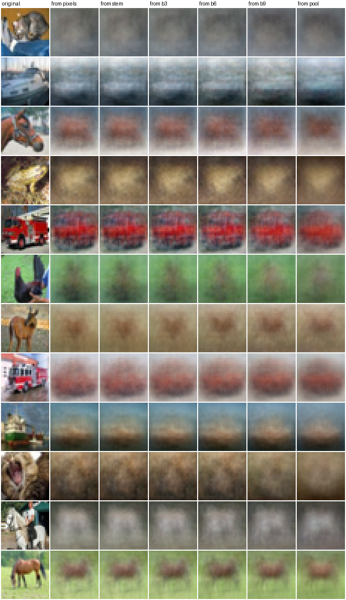
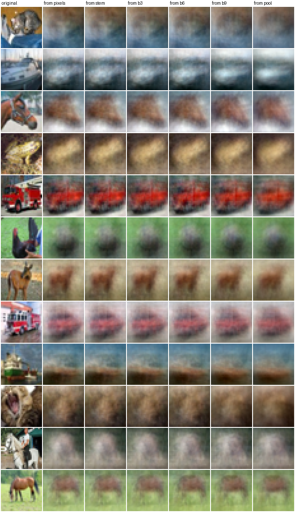
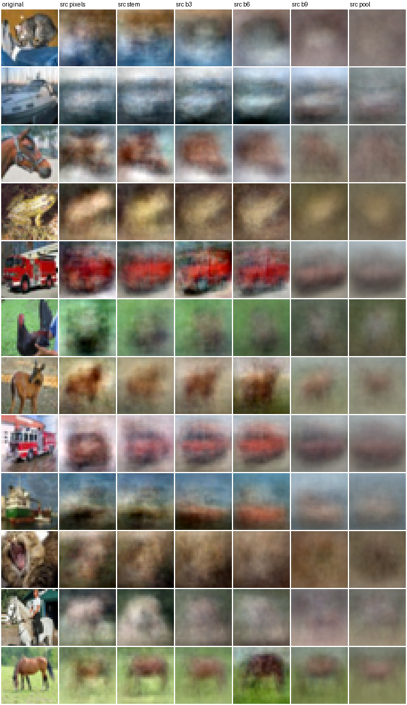
Full decoding report · Pixel-decoding appendix · Placing new images · Decoder code
Do diffusion wavelets give a better or more interpretable inverse than harmonics?
Tested: one CIFAR-10 ResNet-20 (seed 0, step 64,000), the 8,000-image probe P8 with participation-ratio target 400 (pr400), 2,000 held-out test images (H), 12 sites. The wavelets are an exact spectral-band construction (bands of eigenvectors, a pivoted-QR basis per band), not Coifman–Maggioni’s recursive compressed QR. The viewer’s wavelet mode uses a different operator (below).
Decoding the same 64 coordinates with the best-n wavelets instead of the leading-n harmonics (each at its own split-chosen n) changes held-out cosine by -0.004 to 0.001; kernel ridge on the same kernel stays 0.001–0.025 above the harmonics. Truncating a site’s own walk at an allowed spectral reciprocal A is a true spectral cut-off (the band at A = 2 keeps 2–4 functions at stem–b8, cosine 0.20–0.47), but reconstruction, patched top-1 agreement and round trip never pick the same A at any conv site. Activations are not sparser in these wavelets: at n = 256 the best eigenvectors hold more probe energy at 11 of 12 sites, and the wavelets beat within-band random rotations by only 0.0004–0.0063.
Where the basis can matter at all: over a complete band the wavelets are an orthogonal rotation of the band’s eigenvectors, so a linear decode over that band is identical in either basis (checked to 6.6e-15 relative). A decode can differ only through which functions are kept when a band is cut part-way, and how many. Why the separately selected partial decodes score so similarly was not measured.
What was computed
Three questions are kept apart. Q1 fixes the input (64 coordinates of a held-out image) and the second-stage kernel of the double-diffusion lift; the decoders differ in basis, in which functions they keep and in how many (each n chosen separately). Q2 truncates the site’s own walk at a band and decodes linearly from the site’s own Nyström coordinates, so its input grows with A. Q3 asks how much activation energy n atoms hold. $X_c$ holds the probe activations centred on the probe mean $\mu$; every decode is $\hat x=\mu+(\cdot)$. Cosine compares $\hat x-\mu$ with $x-\mu$; agreement patches $\hat x$ itself.
| Quantity | Equation | Symbols and choices | Code |
|---|---|---|---|
| Band | $V(1/A)=\operatorname{span}\{u_k:\lambda_k\ge\lambda_1/A\}$ | $TU=U\operatorname{diag}(\lambda)$, $U$ orthonormal, $\lambda$ descending; $\lambda_1=1$ for both operators: the site walk’s top eigenvalue is 1 (its constant mode is then removed), and for Q1 $\lambda_k=\sigma_k/\sigma_1$ are the eigenvalues of $T=K^*/\sigma_1$, so the cut is $\sigma_k\ge\sigma_1/A$. A ∈ {1.5, 2, 4, …, 233} ∪ {102, 104}, plus the floor $\lambda\ge10^{-10}\lambda_1$; fixed before any held-out score was read. Whole multiplicity blocks are kept; empty or repeated bands dropped. $W_i=V_i\ominus V_{i-1}$. A is the allowed reciprocal; the largest reciprocal actually retained, $\lambda_1/\lambda_{\min}$ over kept modes, is reported separately and can be smaller. Neither is the gain of the coordinate-to-activation map. | stage_dw.py:partition, dw.py:levels |
| QR wavelets of a band | $C=\operatorname{diag}(\lambda_B)U_B^\top,\ C\Pi=QR,\ \Phi=U_BQ$ | Columns of $C$ are band-filtered deltas at the probe points (one application of $T$); column-pivoted QR orders them by largest remaining norm. Sign: $\Phi$ is positive at its pivot (the seed point, not necessarily the peak). | dw.py:band_basis |
| Out-of-sample value | $z_\Phi(x)=p_xU_B\Lambda_B^{-1}Q$ | $p_x$: the new point’s kernel row, in the same normalisation as the eigenvalues. Divide by eigenvalues in the eigenbasis, then rotate. | dw.py:extend, stage_dw.py:Lift |
| Second stage (Q1) | $T=K^*/\sigma_1,\ K^*_{ij}=e^{-\|z_i-z_j\|^2/2h^2}$ | $z_i$: the 64 joint (or source) coordinates of probe image $i$; $h$ frozen at the stored double-diffusion GCV width. Not mean-removed, so the leading eigenvector is nearly constant. | ddm.py:LatentHarmonics |
| Q1 decoders | $\hat x(z)=\mu+z_\Phi(z)_S\,B_S,\ B=\Phi^\top X_c$, $z_\Phi(z)=k^*(z)U_B\Sigma_B^{-1}Q$ | $S$: the leading $n$ harmonics (lead), or the $n$ atoms with largest $\|B_k\|^2$ among eigenvectors (ebest), QR wavelets (wbest) or one within-band random rotation (rbest, seed 0). $k^*(z)$: the raw Gaussian row, $\Sigma$ the raw Gram eigenvalues. ebest, wbest and rbest also have arms restricted to A ≤ 102 and A ≤ 104, each with its own n. | stage_dw.py:Lift.decode |
| Ridge, same width | $\hat x=\mu+k^*(z)(K^*+\rho I)^{-1}X_c$ | Effective degrees of freedom $\sum_j\sigma_j/(\sigma_j+\rho)$, used to place it on the n axis. The stored tuned kernel ridge (krr, its own width and linear part) is the practical benchmark. | stage_dw.py:Lift.ridge |
| Choice of n | $n^*=\arg\min_n\|\hat X_{20}-X_{20}\|_F^2$ | $n$ ranges over up to 120 log-spaced candidates plus band boundaries. Inner 80/20 split of all 8,000 probe images (seed 0): kernel, bands, bases, rankings and coefficients rebuilt on the 80% (targets centred on its mean). Only $n^*$ (and $\rho$) transfers to the full-probe fit scored on H. | stage_dw.py:run (inner split) |
| Q2 band decode | $\hat x=\mu+p_xU_k\Lambda_k^{-1}U_k^\top X_c$ | $P_l$: the site’s pr400 Sinkhorn walk (zero diagonal, top eigenvalue 1, constant removed, positive spectral sector only); $U_k$ spans $V(1/A)$. Identical in wavelets and eigenvectors. | stage_dw.py:q2_part |
| Round trip (Q2) | $\mathrm{rt}=\sum_i\|\tilde z(\hat x_i)-z_i\|^2/\sum_i\|z_i-\bar z\|^2$ | $\tilde z(\hat x)=f(\hat x)U_k\Lambda_k^{-1}$: the band coordinates of the decode through the same forward map $f$ (activation to kernel row) as the request. The held-out coordinate mean scores exactly 1, returning zero about 1.00, another image’s coordinates about 2. | stage_dw.py:q2_part |
| Error amplification | $\dfrac{\|\hat x(z+\delta)-\hat x(z)\|/s_X}{\|\delta\|/s_Z}$ | $\delta$: a random difference of two probe coordinate rows, rescaled to 5% of the probe RMS cloud radius $s_Z$; $s_X$ the probe RMS radius of the activations. Median over H. A synthetic stress test. | stage_dw.py:run (score) |
| Scores | $\cos(x-\mu,\hat x-\mu)$; $\mathbf 1[\arg\max f_{>l}(\hat x)=\arg\max f_{>l}(x)]$ | Mean over H. Agreement: the decode is patched in at the site and the rest of the network run; top-1 compared with the same image’s unpatched prediction. | ddm.py:vec_scores, stage_dw.py:run |
| Energy share (Q3) | $\sum_{k\in S}\|B_k\|^2/\|X_c\|_F^2$ | $S$: first $n$ eigenvectors, or best $n$ eigenvectors, QR wavelets or random-rotation atoms (mean over five rotations) of the site walk. | stage_dw.py:q3_part |
| Localisation | $n_{90}=\min\{m:\text{top }m\text{ entries of }\phi^2\text{ hold }90\%\}$ | Per atom $\phi$ (unit norm on the probe); also the squared mass on its absolute peak and that point’s 400 nearest probe points. | dw.py:localisation, stage_dw.py:loc_t |
Supporting figures
The public viewer has a wavelet mode on its own operator, not the one measured here: scaling functions of the joint operator $L_t$ (scale own, depth coupling t* = 8.364, union 15-NN walk, probe P2, ResNet-20 seed 0, step 64,000). Its six scales have ranks 3, 6, 13, 24, 53, 93 at heat times t = ln 2/μc = 0.625, 0.501, 0.373, 0.300, 0.252, 0.233, with at most 16 functions shipped per scale. Each function starts as a heat bump at time t from one (image, site) seed, truncated to the slowest slice-mean-zero modes keeping at least half their amplitude; pivoted QR then orthonormalises the bumps in seed order. They are weakly localised too: the median 90%-mass support of the shipped functions is 3,514–9,090 of 24,000 points, against 7,329–11,350 for all eigenvectors of the level. The relative gaps at the two finest band edges are 0.9% and 0.3%, so those two cut-offs may be sensitive to changes in the operator; that was not tested.
Caveats
- Q1 final scores are held out (n and the ridge parameter chosen on the inner probe split). Curves along n, and their maxima, are read on H and are descriptive. In a few Q1 cells the 10−10 floor bounds n: the joint-b3 leading-harmonics fit was clipped on refit (197 requested, 195 available), and at source stem and b7 the split chose the top of its candidate range.
- The admissible bands depend on measuring A against σ1 of a Gram that is not mean-removed. At stem–b8, σ2/σ1 is 6.8e-6 to 2.0e-3, and A ≤ 102 keeps only the nearly constant leading function at 9 of 9 sites (joint). From b9 the restricted wavelet decode works (cosine 0.594 at b9, 0.916 at logits).
- Q2’s input grows with A (1 to 3,517 coordinates), so Q2 is not the same comparison as Q1, which always uses 64. Q3’s held-out decode is a new encoding, computed from the true activation’s kernel row; in general it cannot be computed from the first n eigen-coordinates, because selected atoms may use modes outside that prefix.
- In conv sites 21–26% of the centred activation energy lies outside the positive spectral sector the dictionary spans (the walk has 4,482–4,678 negative eigenvalues there), so no band can reconstruct it.
- Error amplification is a synthetic stress test, not an error model for any application. Agreement is top-1 only; atoms are ranked by group norm over all activation dimensions, one ranking per site.
- One network, one checkpoint, one probe draw; uncertainty is over held-out images only.
Method concerns
- Limit — admissible bands depend on the σ1 convention. At A ≤ 102 the joint dictionary at stem–b8 holds only the nearly constant leading mode; at A ≤ 104, b4–b6 and b8 admit 62–64 modes (restricted wavelet cosine 0.431–0.485). Referencing σ2 or centring the Gram would define a different experiment; neither was run.
- Limit — why the basis changes so little in Q1 was not measured. The overlap between the selected wavelet and harmonic sets was not computed. Measure it per site.
- Limit — other wavelet constructions untested. Coifman–Maggioni’s recursive compressed QR (with its localisation guarantees and fast transform) and Coifman–Lafon multiscale geometric harmonics were not run as inverse methods on this network; a recursive-QR port is used only as a synthetic control. Compare both with these exact spectral bands.
- Limit — generalisation is open. Repeat across seeds, checkpoints and probe draws.
Decisions made on the owner’s behalf (8)
| Decision | Chosen | Alternative | Why | Could bias | How to test |
|---|---|---|---|---|---|
| Headline question | Q1: same 64-coordinate input, other basis | Headline Q3 (compression) | “Comparable to double diffusion” read as decoding the same supplied point | Understates a basis that helps only as a new encoding | Q3 is reported alongside |
| Levels | Exact spectral bands named by allowed reciprocal A | Dyadic diffusion-time grid; the paper’s recursive QR | At b4, half-amplitude times ¼, ½, 1, 2 give ranks 505, 16, 3, 0 | Band edges need not sit at spectral gaps | Snap edges to gaps, as the viewer does |
| A grid | 1.5, then powers of 2 to 233, plus 102, 104; floor 10−10λ1 | Other spacing or floor | Fixed from the spectrum before held-out scores | Peaks along A are read on this grid only | Denser grid near the peaks |
| Inner split | 80/20 of all 8,000 probe images | The 4,000-image subsample the double-diffusion run used for its split selection | Use the whole probe the final fit uses | Budgets not comparable to the stored GCV choice (made on the full probe) | The stored GCV lift is marked in the Q1 curves |
| Budget for lead | Its own split-chosen n | The wavelets’ n | “The same split-chosen n” read as the same procedure | Differences mix basis and budget | Lead at the wavelets’ n is also stored |
| Random rotations | One rotation (seed 0) for decodes; five for energy and localisation | Five for decodes too | Cost | One draw for the decode control | Decode the other four |
| Stored kernel ridge | Reuse its stored selection (parity-checked) | Search again | Keep the benchmark identical to the decoding entry | None beyond the stored choice | Reproduced to 3.0e-8 in per-image cosine |
| Atom ranking | One ranking per site by group norm over activation dimensions | Per activation dimension | One dictionary per site | Favours atoms for high-variance dimensions | Rank per output block |
More figures (7)
Wavelet mode in the viewer · Decoding entry · Notes · Measurement code · Wavelet code · At a glance
Where do other datasets, noisy and adversarial images land?
Tested: one CIFAR-10 ResNet-20 checkpoint. Overlay and support plots use the frozen 2,000-image CIFAR-10 probe P2 pr300. The quantitative decoding comparison uses the 8,000-image probe P8 pr400. Neither probe nor decoder was fitted to the shifted inputs.
SVHN has higher reconstruction cosine and captured share than CIFAR-10 at b4, but similar patched top-1 agreement. The reference is the network’s activation and prediction on the same input, not a clean counterpart or a class target.
All tiles use P8 pr400 at K = 64.
What was computed
| Quantity | Equation | Symbols and choices | Code |
|---|---|---|---|
| Frozen row | $d(x,j)=1-\cos(x-\mu_l,x_j-\mu_l)$ $p_l(j\mid x)\propto v_j[q(j\mid x)+q(j\!\to\!x)]$ | $q(j\mid x)$ is the new point’s normalised Gaussian conditional, fitted to participation ratio 300 or 400. The reverse term uses probe image $j$’s frozen width, shift and normaliser; $v_j$ is its probe balancing factor. The resulting row is normalised to sum to one. | modal_invert:gram, set_rows; dm:ea_oos_rows |
| Source and joint | $s_{l,k}=p_l(x)f_{l,k}$ $y_{\cdot,k}=T_k^{-1}(s_{\cdot,k}/(2c))$ | $f_{l,k}$ is the slice of joint mode $k$. The fitted joint operator’s eigenvalue $\mu_k$ shifts $T_k=\operatorname{diag}(1/(2c))+tD_{\mathrm{path}}-\mu_k I$. No per-set refit. | modal_invert:joint; dm:joint_forward |
| Decode cosine and row concentration | $\cos(x-\mu_l,\hat x-\mu_l)$ $\max_j p_l(j\mid x)$ | Cosine uses the decode from joint coordinates and the actual activation on the same input (P8 pr400). The largest kernel-row weight (P2 pr300) measures concentration, not distance to the probe. | stage_decode:score, run; modal_invert:joint |
| Shifted inputs | $x_\sigma=\operatorname{clip}_{[0,1]}(x+\sigma\eta),\ \eta\sim\mathcal N(0,I)$ | First 2,000 test images each from CIFAR-100 and SVHN; noise on all 2,000 held-out CIFAR-10 test images (H). Untargeted $L^\infty$ PGD on the first 1,000 rows of H sorted by test index, using true labels, budgets 2/255 and 8/255, random start, 20 steps at $\epsilon/4$. All attempts are included. | modal_invert:extract |
| Paired displacement | $K^{-1}\sum_k((z^{\mathrm{adv}}_{l,k}-z^{\mathrm{clean}}_{l,k})/\sigma_{l,k})^2$ | $z$ is source or joint, K = 16; $\sigma_{l,k}$ is the empirical population standard deviation on the paired clean cohort. The reference value 2 applies to independent population-standardised draws or draws with replacement from this empirical reference. | adv.py:21–56 |
Supporting figures
Caveats
- Higher cosine on SVHN does not establish better support or greater information retention. Mean shifts, activation spread and decoder bias could all change this comparison; their contributions were not separated.
- Audit correction: For the full report's nearest-centroid readout, the joint centroids were fitted on the probe, but the source centroids were fitted on the second half of H. Those two readouts do not share the same labelled reference fit.
- 74 of 1,000 inputs were already wrong when clean. Misclassified on attacked input: 994 at 2/255 and 1,000 at 8/255, including 69 and 63 already-wrong predictions that did not change. Predictions changed on 925 and 937, respectively. Displacement includes every attempt, not just originally correct inputs.
Method concerns from the audit
- audit Limit — dataset effects can raise reconstruction scores. Higher cosine and captured share need not be image-specific. Compare a dataset-mean decoder or shuffle coordinates within each dataset.
- audit Possible flaw — concentration is not support. The frozen reverse term can exceed one before re-normalisation. A diffuse row may have no close neighbour. Compare absolute nearest-probe cosine and calibrate decode error by coverage.
- audit Limit — pixel noise is not a size-matched control. This single attack setup does not establish robustness; compare matched perturbation sizes and settings on the same cohort.
Decisions made on the owner's behalf (4)
| Decision | Chosen | Alternative | Why | Could bias | How to test |
|---|---|---|---|---|---|
| Reference | Freeze CIFAR-10 probe and decoder | Refit per dataset | Test transfer without changing the coordinate system | Measures transfer from this particular probe | Compare with matched dataset-specific fits |
| Attack | PGD 20, step $\epsilon/4$ | Longer PGD, more restarts | Limit cost | Outcomes depend on attack strength | Compare to X3’s settings on the same cohort |
| Readout | Source and joint, with site switch | Joint only | Keep local change distinct from depth mixing | Joint displacement at an early site need not be local change | Replace late-site source changes with zeros and recompute joint displacement |
| Display and support | P2 pr300 projection and row max | Show P8 and use a calibrated nearest-probe distance | Use the packaged full-depth picture and saved rows | Projection and concentration may hide weak absolute affinity | Compare in full coordinates and calibrate affinity against held-out decode error |
More figures
Full shifted-input report · Full adversarial report · Placing new images · Displacement code
Can an activation be given another image's source coordinates, and does the output follow?
Tested: one CIFAR-10 ResNet-20 checkpoint, P8 pr400, K = 16 and 64. Each intervention changes one activation and recomputes the suffix.
At b4, matching the donor’s source nearly exactly made the patched joint match slightly worse. The donor’s class probability barely moved. Even this source match used the donor’s actual activation as an oracle.
On this rerun slice, adding matching at b4 cut the full-dimensional mean source miss from 0.18 to 0.000000007. The mean probability of b’s class was 16.9% for the guess and 17.1% after matching.
P8 pr400, b4, K = 64: residual guess → guess plus oracle match. Matching instead to the source inferred from the joint input left the actual-source miss at 0.05964 and donor probability at 0.41480.
What was computed
| Quantity | Equation | Symbols and choices | Code |
|---|---|---|---|
| Joint decode, source target | $D(y)=\mu_l+W(y)X_c$ $s_l(x)=p_l(x)f_l$ | $D$ decodes from joint coordinates at the edit site; $y_a$ and $y_b$ are each computed from that image’s entire clean run, including logits. A source uses only the selected activation at inference. Oracle matching uses b’s actual source; the inferred target uses the same activation-tuned weights on different probe targets, $W(y_b)(P_l f_l)$. | stage_rt:FS, Wd, D, run |
| Residual guess | $x_0=x_a+D(y_b)-D(y_a)$ | $x_a$ is a’s true activation; $y_a,y_b$ are the two images’ joint coordinates at this site. This keeps a’s residual from its own decode. “Decode b alone” instead sets $x'=D(y_b)$. | stage_rt:run (E4) |
| Matching step | $u_*=J^\top(JJ^\top+\lambda I)^{-1}(s_*-s_l(x)+Ju)$ $\lambda=10^{-6}\operatorname{mean}\operatorname{diag}(JJ^\top)$ | $u$ is the current displacement in the search coordinates from the start $x_0$; $J$ differentiates the source in those coordinates. $J$ is recomputed by autograd, including the implicit width derivative $\partial_d\beta=-\partial_d H_2/\partial_\beta H_2$ for $H_2(\beta,d)=\log(\mathrm{PR})$. The damped linearised candidate is measured from $x_0$, not as a free increment. | stage_rt:crit_and_slope, bisect_beta, Site.rows, match |
| Search metric and bounds | $x=x_0+u$ or $x=x_0+G^\top u$ | Euclidean matching searches directly in activation space; probe-metric matching penalises coefficient norm with $G=X_c/\sqrt N$. Both use an activation-space step cap $0.5\sigma_0$ and radius $3\sigma_0$ from their own start; $\sigma_0$ is the mean centred activation norm on the held-out batch at that site. Twenty iterations; at most six trials per iteration, halving failed ones and accepting only a non-increasing unscaled source residual. | stage_rt:match |
| Miss and requests | $K^{-1}\sum_k((s_{l,k}(x')-s_{*,k})/\sigma_k)^2$ $s_*=(1-\tau)s_l(x_a)+\tau s_l(x_b)$ | $\sigma_k$ is the sample standard deviation of mode $k$ over the held-out batch, measured at that site. E4 scores standardised source and patched joint misses against b, each using its own held-out spread. A full activation swap reproduces b’s suffix and output, not its full joint trajectory. E5 requests the midpoint ($\tau=0.5$) or an extrapolation ($\tau=1.5$). | stage_rt:srel, run (E4, E5) |
| Edit size and random control | $\|x'-x_a\|_2/\|x_b-x_a\|_2$ | Size is relative to a full activation swap. The random control uses an isotropic unit direction scaled to the corresponding method’s actual move for each pair. | stage_rt:run (E4) |
| Output probability | $p_b=\operatorname{softmax}(f_{>l}(x'))_{\arg\max f(x_b^{\mathrm{image}})}$ | The index is b’s clean predicted class. Mean $p_b$ averages that class’s probability over pairs; a switch rate would instead count, per pair, whether that class has the largest probability. | stage_rt:FD, run (E4) |
Supporting figures
Caveats
- The cohort is the first 256 rows of sorted H (through test index 1,262). Donors start one position back cyclically; later shifts apply only when clean predictions agree. There are 256 valid pairs and 228 distinct donors, with maximum reuse 3. Neither the pairs nor the sites are independent replicates.
- Against the corresponding P2 archive slice, b4 probabilities and sizes replay exactly. The maximum deterministic b6 discrepancies were below 0.00065 in probability and 0.000031 in relative size. At b6, random directions were redrawn.
Method concerns from the audit
- audit Limit — sources lose radial scale and late-site rank. A positive rescaling about the probe centre preserves the source. The local Jacobian rank is at most 63 at pool and 9 at logits, short of K = 64. Measure singular values; a match cannot certify recovery of the donor activation.
- audit Limit — a solver miss is not infeasibility. Without bounds, an actual donor activation is a feasible witness. A midpoint or extrapolation need not have any realising activation. Starting from a, the K = 64 Euclidean donor misses were 1.209 at pool and 0.246 at logits. Report cap/radius hits and donor distance, and separate oracle-feasible from synthetic requests.
- audit Possible flaw — edits need not look like real activations. Even probe-span displacements can give off-support endpoints or violate post-activation sign constraints. Report norm changes, sign violations and distance to real held-out activations.
- audit Limit — the random control does not isolate matching. At P8 b4 K = 64, mean relative sizes were 0.553 for the residual guess and 0.572 with matching. The headline random draw starts at a and is size-matched to the whole guess, not to the extra matching step. Compare paired random increments from the guess, covariance-aware noise and probability-versus-budget curves.
Decisions made on the owner's behalf (4)
| Decision | Chosen | Alternative | Why | Could bias | How to test |
|---|---|---|---|---|---|
| Target | Match a site’s source, not its joint coordinate | Optimise the joint coordinate of the patched run | The local target depends only on the edited activation | A small source miss can coexist with a large joint miss | Compare with a suffix-in-the-loop objective |
| Solver | Bounded damped Gauss–Newton | Constrained optimisation with multiple starts | Cheap batched moves with a cap on large excursions | Extrapolation misses may reflect bounds or a local solution | Sweep bounds and test a second solver |
| Distances | Euclidean and probe-metric matching, starting at a | Other regularisers or budget constraints | Test whether edits along probe variation steer the output better | Probe metric changes both directions and sizes | Compare at the same size with covariance-matched controls |
| Output | Mean probability of b’s prediction on different-prediction pairs | Switch rate; all pairs | Measure soft steering even when top-1 does not change | Large moves on a few pairs can raise the mean | Report per-pair quantiles and top-1 switches |
More figures
Full edits report · Placing new images · Matching and patching code
Do networks trained on other data embed the same probe alike?
X1 · 18 ResNet-20s, one common probe of 2,000 CIFAR-10 test images. Training images, labels, normalisation and augmentation can all differ.
Several natural-image pipelines gave similar embeddings on the same CIFAR-10 probe; SVHN agreed less. It also agreed less in a stem-only check: neighbour overlap was 0.355 versus 0.715 for CIFAR-100.
What was computed
| Quantity | Definition | Symbols and choices | Code |
|---|---|---|---|
| Site walk | $C_l=\hat X_l\hat X_l^\top,\quad P_l=D_lW_lD_l$ | Flatten activations, centre on the probe mean, and divide each row by its norm (clamped below). Take the union of directed 15-nearest-neighbour edges by cosine; $W_l=1$ on edges, $10^{-6}$ on off-diagonal non-edges, and zero on the diagonal. Symmetric Sinkhorn gives $D_l$ so $P_l$ is doubly stochastic, to numerical tolerance. | xp/xlib.py:probe_gramxp/dm.py:knn_kernel |
| Joint coordinates | $\mathcal L_t=\operatorname{blockdiag}((I-M_l)/c_l)+tD_{\rm path}\otimes I$ | $M_l=(I+P_l)/2$; $c_l$ is the mean of the first eight nonconstant gaps of $M_l$. $t=t^*$ at the first crossing of the slice-mean-zero spectrum with the lowest nonconstant depth-only eigenvalue. Use the 16 lowest modes in the slice-mean-zero subspace; a joint coordinate can depend on every trunk site. | xp/xlib.py:fit_opspacetime.py:balance_direct, modes |
| One fit per pair | $B_T^\top A_T=U\Sigma V^\top,\quad Q=UV^\top$ | Use the same random half $T$ (1,000 image identities) at every site, stacking all trunk sites before fitting. No per-site rotation, centring or rescaling in this fit. $Q$ is orthogonal and may include reflections. | xp/stage_compare.py:site_share |
| Joint agreement | $\cos_l=\langle A_{l,H}, B_{l,H}Q\rangle_F/(\|A_{l,H}\|_F\,\|B_{l,H}Q\|_F)$ | Score on the other 1,000 images $H$ at each site. They are held out of the fit, not out of the operator: both walks were built on the full probe. This is a cosine, not explained variance. Pipeline curves average unordered network pairs in the archive’s A/B order. | xp/stage_compare.py:site_share, run |
| Image-identity nulls | $B_l(i)\mapsto B_l(p(i))$ | A random generator with seed 0 draws an unrestricted permutation, shuffles separately within each true probe class (in label order), then permutes the image indices again: first half to fit, second half to score, each sorted back into probe order. The same indexing applies at every site. Refit $Q$ on the same nominal fit indices for each null and score on the same nominal held-out indices. | xp/stage_compare.py:within_class_perm, run |
| Neighbour overlap | $\frac1{15N}\sum_i |N_{A,l}(i)\cap N_{B,l}(i)|$ | Directed cosine-nearest neighbours in centred activations (not in joint coordinates), all probe images. For a null, relabel both endpoints of B’s neighbour edges by $p^{-1}$, so B’s image $p(i)$ plays the role of $i$. | xp/modal_xp.py:embedxp/stage_compare.py:run |
Supporting figures
Caveats
- Audit correction: This compares pipelines, not the effect of changing data alone. Class counts, images, test accuracy, augmentation, training exposure and normalisation can change together. The coarse-label control tests one change of labels on fixed images, not all changes.
- Audit correction: Rankings can change with depth and probe. On SVHN at b9, CIFAR-10 agrees more with the animal and vehicle subsets than with ImageNet-32. See the SVHN-probe paragraph under “Checks using other probes and operators” below.
- One architecture, usually two runs per pipeline. No probe bootstrap or equivalence test was reported; run-pair scores share networks and are references, not independent estimates of seed uncertainty or ceilings.
- The rotations replay the saved reference-panel cosines to 1.8e-15 maximum absolute error on the raw modes. On the shipped int8 coordinates, the same rotations give a maximum error of 0.000229 before display projection. Headers show the original scores.
Method concerns from the audit
- audit Interpretation limit: Only the alignment is held out. Scored images enter the centring, graph, scales, coupling and modes. A fresh probe or frozen out-of-sample scoring would test generalisation.
- Possible sensitivity: Stacking unscaled slices gives higher-energy sites more influence. Compare against equal-site-weight fits.
- Interpretation limit: One split and one draw per null give no variability estimate. Within-class shuffling preserves class structure; its cosine is not the fraction explained by class. Repeat the splits and shuffles.
Decisions made on the owner’s behalf (9)
| Decision | Chosen | Alternative | Why | What it could bias | How to test |
|---|---|---|---|---|---|
| Unit | Whole training pipelines | One factor at a time | Cover different image distributions in one run | Cannot isolate which change matters | Coarse-label control run; swap normalisation and match augmentations next |
| Operator | Trunk only | Full chain | The logit walker can affect every site; task heads vary in size | Excludes pool and logits | Full-chain scores saved |
| Kernel | k-NN 15 | Shannon perplexity 100 | Match the viewer’s walk rule | Can change agreement and neighbourhood scale | Shannon trunk scores saved |
| Rotation | One orthogonal fit on half the images | Fit a rotation independently at each site | Test a shared basis without fitting the scored matches | May understate agreement where bases rotate with depth | Compare with independently fitted, held-out site rotations |
| Normalisation | Each network’s own input statistics on all probes | Shared statistics | Compare the full image-to-activation pipelines | Changes in input scaling contribute to measured differences | Swap statistics without retraining |
| Seeds | Usually two runs per pipeline; the CIFAR-10 group includes zoo seed 0 and a separate X1 run also labelled seed 0 | More independent runs | Run budget | Equal-numbered fine/coarse runs share seed schedules for initialisation, minibatch order and augmentation | Increase seeds and sample probes |
| ImageNet-32 | X1 trainer: batch 128, usually 64,000 steps, 250,000 for ImageNet-32 | Match steps, exposure or accuracy | Larger dataset | More steps on the larger dataset need not mean more passes per image | Sweep exposure and include later checkpoints |
| Shuffled labels | Shuffle training labels once; no augmentation | Match augmentation | Permit memorisation | Not a clean estimate of the effect of random labels | Compare trained true- and shuffled-label runs without augmentation |
| Uncertainty | Show run-pair references and controls | Bootstrap held-out probe images | No bootstrap in saved outputs | Small gaps are easy to overread | Resample probe images and repeat across trained seeds |
See the specification and audit-corrected findings.
More figures and training data
Checks using other probes and operators
Using stem activations alone, mean directed-neighbour overlap for CIFAR-10 versus CIFAR-100, ImageNet-32 and SVHN is 0.715, 0.698 and 0.355, respectively; stem-only linear CKA is 0.961, 0.955 and 0.707.
On the CIFAR-10 probe at b9, CIFAR-100 × ImageNet-32 averages 0.91, slightly below the seed-pair references of 0.94 and 0.97. For comparison, the mean unrestricted-permutation score across distinct networks is -0.01.
On the SVHN test probe at b9, CIFAR-10 versus animals, vehicles and ImageNet-32 gives 0.73, 0.70 and 0.64. CIFAR-10 versus SVHN, untrained and shuffled labels gives 0.25, 0.30 and 0.44. The CIFAR-10 run-pair mean is 0.75 and the SVHN seed pair is 0.96. The SVHN seed pair is 0.76 on the CIFAR-10 probe.
On the ImageNet-32 validation probe at b9, CIFAR-100 × ImageNet-32 falls to 0.76, versus 0.91 on the CIFAR-10 probe. The fine/coarse CIFAR-100 control gives 0.86, versus seed references 0.89 (fine) and 0.87 (coarse); the ImageNet-32 seed pair gives 0.92. These probe comparisons use k-NN 15 trunk operators; no images from the additional probes are shown.
| CIFAR-10 probe at b9 | k-NN trunk | k-NN full | Shannon trunk |
|---|---|---|---|
| CIFAR-10 run pairs | 0.95 | 0.96 | 0.96 |
| CIFAR-10 × CIFAR-100 | 0.75 | 0.75 | 0.75 |
| CIFAR-10 × SVHN | 0.36 | 0.21 | 0.38 |
| CIFAR-100 fine × coarse | 0.93 | 0.88 | 0.94 |
The gap between the CIFAR-100 and SVHN comparisons persists with the Shannon trunk and the full k-NN operator. The fine/coarse score is lower with the full chain than with either trunk-only operator.
Training pipelines
Test accuracy is on the network’s own task, not on the common probe. Shuffled labels are used only for training. “Own” means per-channel mean and standard deviation over the selected training images, in pixel units; the zoo checkpoints use fixed CIFAR-10 statistics. Cropping uses 4 pixels of zero padding in the X1 trainer.
| Networks | Training images | Labels | Normalisation | Augmentation | Test accuracy (seed 0; seed 1) |
|---|---|---|---|---|---|
| c10-s0; c10-s1 | CIFAR-10 (zoo) | 10 true classes | Fixed CIFAR-10 | Crop + flip (zoo) | 91.56%; 91.51% (zoo/viewer evaluation; X3’s separate seed-1 evaluation gives 91.52%) |
| c10x-s0 | CIFAR-10 (X1 trainer) | 10 true classes | Own | Crop + flip | 91.44%; — |
| c100-s0; c100-s1 | CIFAR-100 | 100 fine classes | Own | Crop + flip | 66.50%; 67.13% |
| c100c-s0; c100c-s1 | CIFAR-100 | 20 coarse classes | Own | Crop + flip | 77.84%; 77.35% |
| svhn-s0; svhn-s1 | SVHN train | 10 digits | Own | Crop, no flip | 96.34%; 96.29% |
| in32-s0; in32-s1 | ImageNet-32 | 1,000 classes | Own | Crop + flip | 24.25%; 24.17% |
| anim-s0; anim-s1 | CIFAR-10 animal subset | 6 animal classes | Own subset | Crop + flip | 90.63%; 90.80% |
| veh-s0; veh-s1 | CIFAR-10 vehicle subset | 4 vehicle classes | Own subset | Crop + flip | 95.97%; 96.15% |
| rand-s0 | CIFAR-10 | 10 labels shuffled once | Own | None | 9.84%; — |
| init-s0; init-s1 | None (zoo step 0) | 10 outputs | Fixed CIFAR-10 at inference | None | Not reported |
Full X1 report · Comparison code · Shared method concerns · At a glance
Do straight paths between two activations hit a wall downstream?
Tested: ResNet-20 trained on CIFAR-10 (seed 0, final checkpoint). 150 pairs of test images from the same class and 150 from different classes, outside the 2,000-image probe and all classified correctly. The same pairs at each of 6 start sites: pixels, stem, b3, b6, b8 and b9.
- No wall in the activations. On 1,800 lines, no recorded later site moved more than 20.7% of its distance within any sixteenth of the line (even pace: 6.25%; a wall: close to 100%).
- Class probabilities can still change sharply. On the steepest line drawn at b3, the starting class falls from 99.7% to 0.1% within one sixteenth.
- Lines drawn early often detour through other classes. 27% of same-class lines drawn at b3 leave their class partway; 0 of 150 drawn at b8 do.
How a line is made
A wall here means a short stretch of the line where the activations downstream do most of their moving. The network is continuous, so nothing jumps literally; the question is how concentrated the change gets. With pixels as the start site, the line is a cross-fade between the two images.
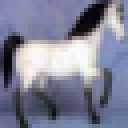
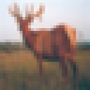
images a and bNo concentrated movement in the activations
At every recorded later site, the activations move along the line at a fairly even pace. To see this, add up how far the activation at a later site moves between neighbouring points, starting from s = 0, and divide by the total. At an even pace this share of distance covered follows the diagonal; at a wall it would stay flat, shoot up, then stay flat. The fastest sixteenth is the largest share covered within any stretch one sixteenth of the line long: 6.25% for an even pace, 100% for a single jump.
Lines drawn at b3: share of distance covered, measured at five later sites
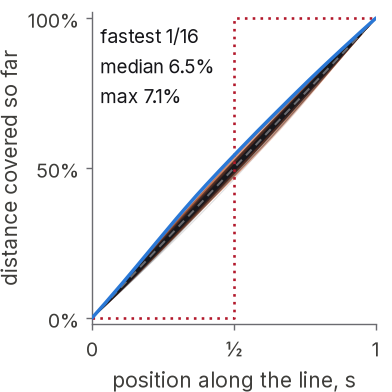
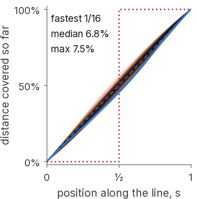
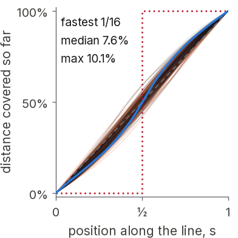
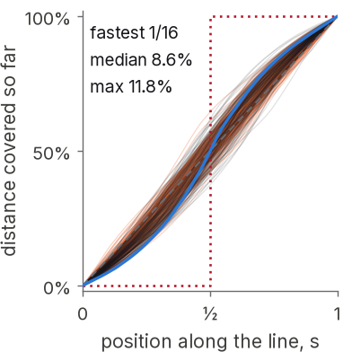
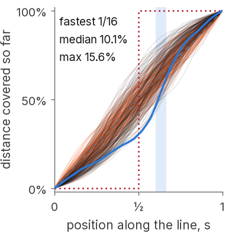
Other start sites agree. The largest fastest-sixteenth share over all pairs and later sites, always at the logits:
| Start site | Largest share |
|---|---|
| pixels | 20.7% |
| stem | 20.2% |
| b3 | 15.6% |
| b6 | 15.2% |
| b8 | 13.6% |
| b9 | 6.25%, exactly even (affine after b9) |
ReLU on/off switches at block outputs are spread out the same way. Counted between neighbouring points and pooled over 8,700 line–site combinations, the fastest sixteenth holds a median 8% of a line's switches and at most 29%.
Class probabilities can still change sharply
Movement is not concentrated, but the output probabilities can change within a sixteenth of the line, because the softmax saturates. The figure adapts the plots of Stefan Heimersheim and Jake Mendel (activation plateaus and sensitive directions, whose x-axis is perturbation size rather than position along a line). The y-axis is the KL divergence between the output probabilities at the start of the line and at s, in nats. When the start is confidently classified, it is close to minus the log of the probability left on image a's class.
Output change along the line, KL(start || current)
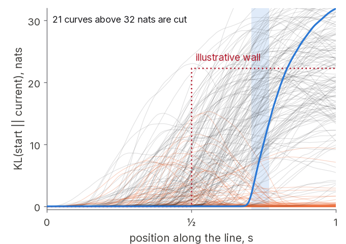
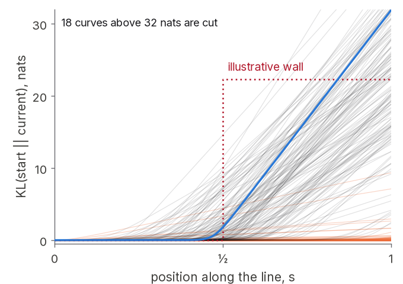
The same pair drawn at b9, where the logits move evenly on a straight line, also rises steeply. While one class leads by a clear margin its probability stays near 1; once another class overtakes it, that probability collapses. Across all lines drawn at b9, the largest drop in starting-class probability within one sixteenth was 83 percentage points. So a flat stretch followed by a steep rise does not need a nonlinear network.
Three lines up close
Each example follows one pair drawn at four start sites: what the network predicts, how fast the logits move, and how strongly the network stretches small changes, all along the line. The maps below show where the line drawn at b3 runs relative to the classes it passes through.
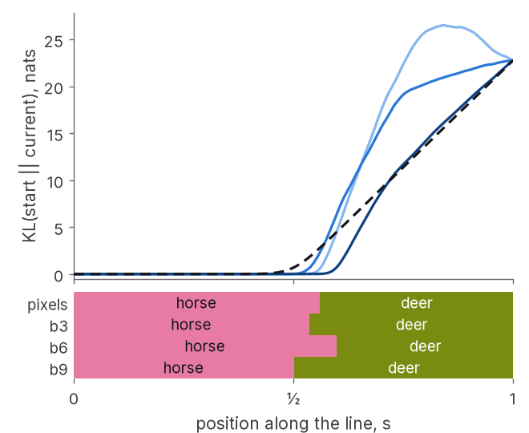
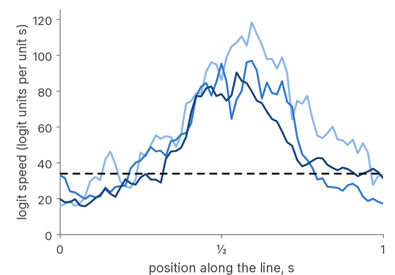
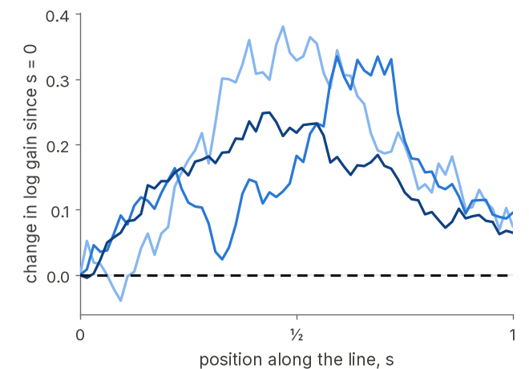
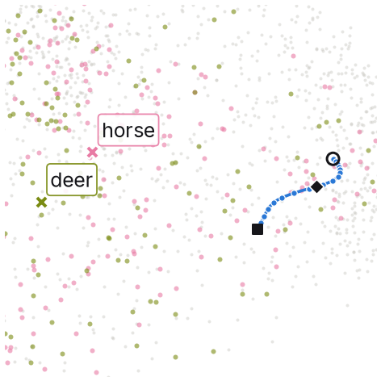
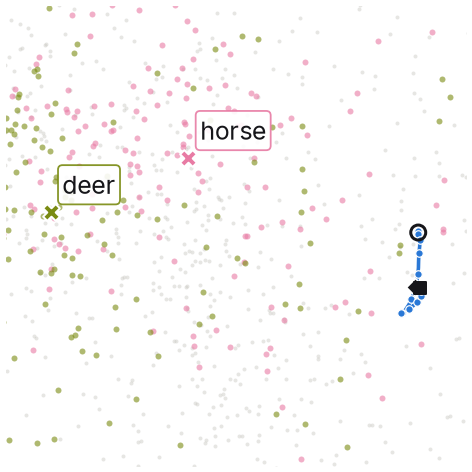
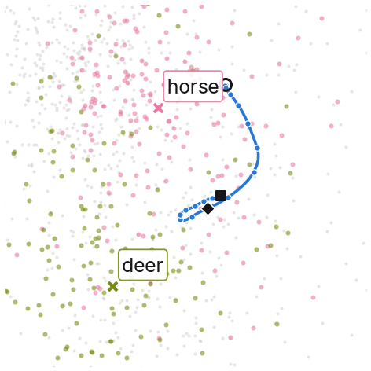
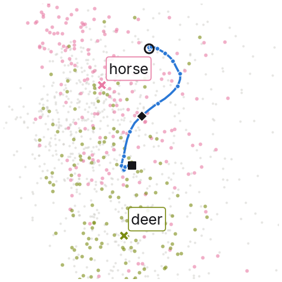
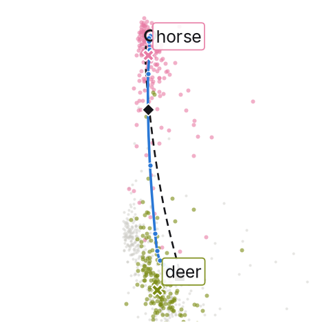
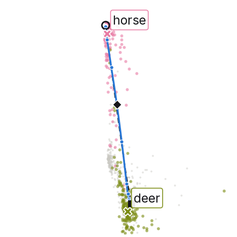
Maps: each panel is that site's own diffusion map of the probe (coordinates 1 and 2), zoomed to the line, so scales differ between panels. Coloured: probe images of the classes the b3 line passes through, with × at each class's centre; grey: other classes. Blue: the line drawn at b3, one dot per sixteenth; dashed: the line drawn at b9; ○ image a, ■ image b, ◆ first change of the prediction on the b3 line.
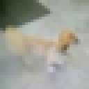
dog→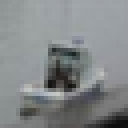
shipA detour through catCIFAR-10 test images 3808 and 3968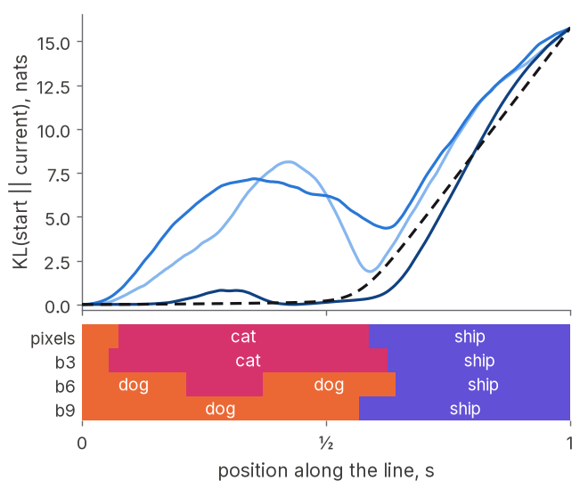
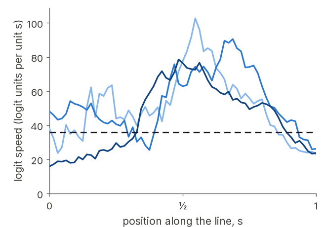
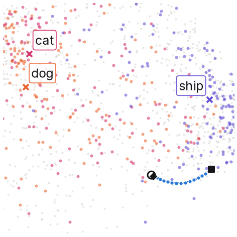
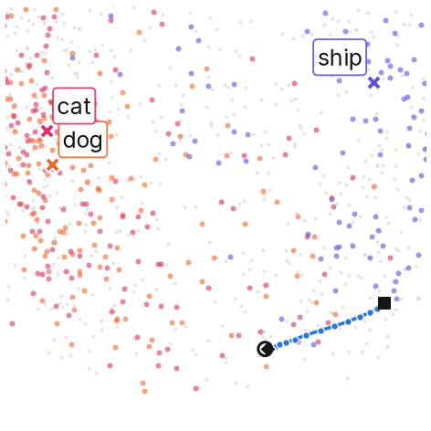
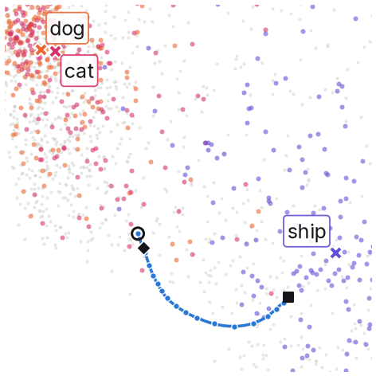
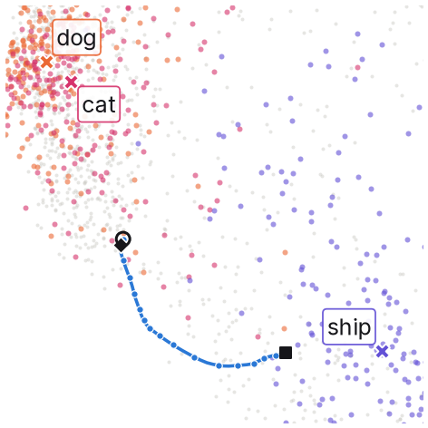
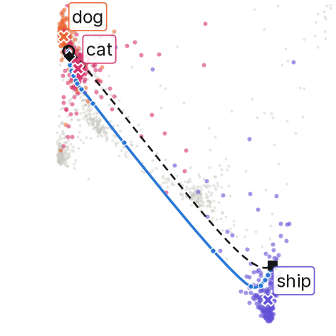
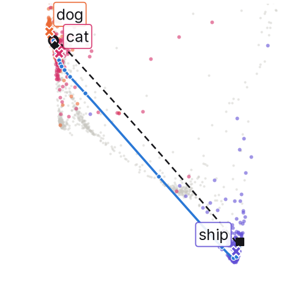
Maps: each site's own diffusion map (coordinates 1 and 2), zoomed to the line; coloured: the classes the b3 line passes through (× = centre). Blue: drawn at b3, a dot per sixteenth; dashed: drawn at b9; ○ a, ■ b, ◆ first change of the prediction on the b3 line.
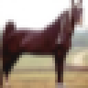
horse→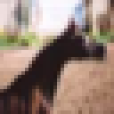
horseA detour inside one classCIFAR-10 test images 8587 and 8514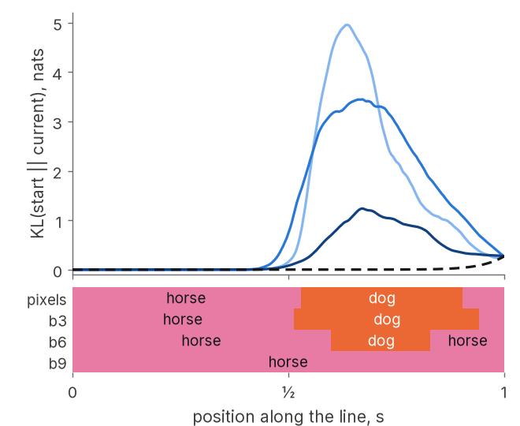
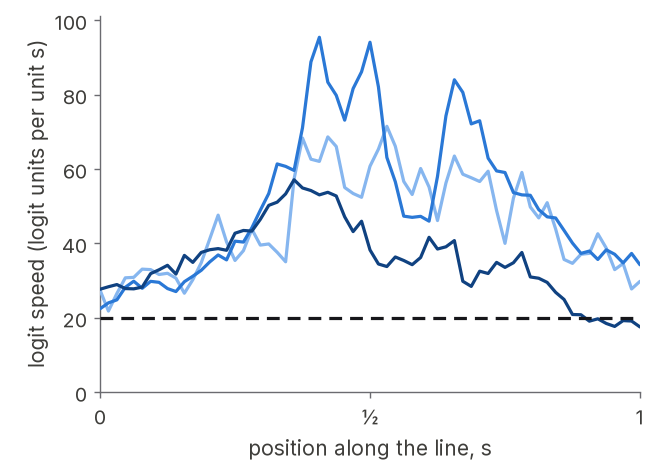
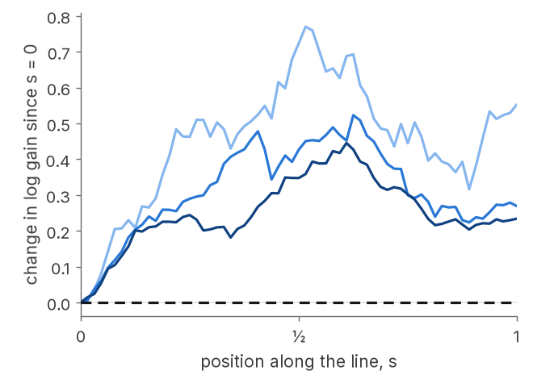
Maps: each site's own diffusion map (coordinates 1 and 2), zoomed to the line; coloured: the classes the b3 line passes through (× = centre). Blue: drawn at b3, a dot per sixteenth; dashed: drawn at b9; ○ a, ■ b, ◆ first change of the prediction on the b3 line.
Lines drawn early detour through other classes
Detours become rarer when the line is drawn after b3. A detour is a stretch where the network's top class is neither endpoint's class. Same-class lines that leave their class spend a median 21% to 26% of the line outside it (drawn at pixels, stem, b3 or b6): the excursions are long, though this measures how long they last, not how sharply they begin. None of 150 same-class lines drawn at b8 left its class. Drawn at b9, none can: the rest of the network is affine, so the logits move on a straight line, and the logits where one class wins form a convex set. A different-class line drawn at b9 can still clip a third class, and 9% do.
How often a line detours, by the start site where it is drawn
In the embedding, crossings bunch up
In b9's diffusion map, the fastest sixteenth of a different-class line carries a median 27% of its embedded distance, against 9% in the same lines' raw activations. Lines drawn straight at b9, whose activations move exactly evenly, reach 32% in the map. The bunching is consistent with the probe's class clusters at b9 and with the kernel used to place new points; this comparison does not separate their effects. It is moderate: 9 of 150 lines drawn at b3, and 12 drawn at b9, put more than half of their embedded distance into one sixteenth.
Share of distance covered at b9: in the activations and in b9's diffusion map
Different-class lines often contain a poorly supported point. At a line's least-supported point, only 4% of clean test images are farther from their nearest probe image at b9, and 1% at the logits (medians over lines drawn at b3), so the map's positions there are extrapolations.
Limits
- One network, one kind of path. ResNet-20 seed 0, final checkpoint, straight lines between correctly classified images. It was not compared with the MLP setting where barriers were seen in earlier activation-cell work.
- Recorded sites only. Activations are recorded at block outputs, the pooled features and the logits, not inside blocks; ReLU switches are counted at block outputs, as net changes between neighbouring points, so they are not a count of distinct cells crossed.
- Sampling. Each line has 257 points, and logit speed and gain are computed at 65 of them, so concentration narrower than one step could hide between points. Re-sampling 300 lines four times more finely changed no fastest-sixteenth share by more than 0.04 percentage points.
- The bunching in the map is checked against straight b9 lines only. Other kernels and kernel widths were not tried.
Explore more lines (interactive)
Technical details
Line. x(s) = (1 − s)a + sb, where a and b are the two images' activations at the start site as the network computes them (for pixels, the normalised input), on 257 evenly spaced points. Endpoints are 579 distinct held-out test images, correctly classified with a top-two logit margin above 0.001.
Fastest sixteenth. At a later site, the step lengths are the Euclidean distances between the activations of neighbouring points; the fastest sixteenth is the largest sum over a sixteenth of consecutive steps, divided by the sum of all steps. In the map it uses distances in the first 16 site-local coordinates; the b9 comparison uses the 65-point grid on which the map was computed for all three panels.
KL, logit speed and gain. KL(start || current) = Σc pc(0) log(pc(0)/pc(s)), with p the softmax of the logits and natural logs. Logit speed is ‖J(b − a)‖ for the Jacobian J from the start site to the logits, computed exactly by a forward-mode Jacobian–vector product; at a ReLU kink it uses the branch automatic differentiation selects. The gain is J's maximum stretch factor σmax (its largest singular value), computed exactly from J JT; the log gain is ln σmax. From b9 and from pool, log gain matches the affine closed forms to 1.2e-15 and 1.8e-15. Exact speed and the finite difference of the line differ by a median 2.6% at the logits (lines drawn in pixels; 1.2% four times more finely): ReLU cells are crossed within a step.
Population numbers for the Jacobian (medians over different-class pairs). Log gain at the midpoint against the start: 3.86 against 3.58 drawn in pixels, 1.88 against 1.68 at b3, 1.82 against 1.56 at b6. Divided by the number of sites crossed, the midpoint log gain is a finite-time Lyapunov exponent of 0.32, 0.23 and 0.36 per site. At the midpoint, the line's own direction receives 2%, 11% and 14% of the maximum stretch. Where the logits move fastest is associated with, not tied to, the first switch: drawn at b3, the rank correlation between the two positions is 0.41 over all different-class pairs and 0.63 over the 69 with a single switch.
Gain and confidence across the probe. At each of the 2,000 probe images, raw log gain from pixels to the logits has rank correlation -0.17 with the margin (top logit minus runner-up). A direction-only log gain, on centred and normalised activations, gives -0.65, mostly because it divides by the length of the centred logit vector, which itself tracks the margin (0.76); without that factor it gives -0.29.
The direction-only distance used in the first version of this page (distances between centred, normalised activations, as the diffusion kernel sees them) gives the same answer: 1 of 1,800 lines put more than 25% of it into a sixteenth before the logits, 14 at the logits; refined lines changed by a per-site median of at most 0.0001. It rises near the probe mean, where normalising amplifies small moves, so this page uses raw distance. A second raw measure, comparing the largest step on a four-times coarser grid with the largest step (1 for a smooth line, 0 for a jump), has minimum 0.89.
Diffusion maps. At each site, a Shannon kernel of perplexity 100 on cosines of probe-centred activations; site-local coordinates are the leading nonconstant eigenvectors of that site's own diffusion operator, and line points are placed by Nyström extension against the fixed probe. A site's coordinates do not depend on the start site, so the b9 line can be drawn in the same panels as the b3 line. The two coordinates drawn are not concentrated on a few images (at most 0.8% of a coordinate's squared norm on its two largest images); some higher coordinates are. A class's centre (×) is the median of its probe images in the two drawn coordinates. Support is a point's largest cosine to any probe image at that site, as a percentile among clean held-out test images.
Choices that could matter. Straight lines in raw activations rather than paths along the data; the same pairs at every start; gain not divided by depth in the plots; the kernel width fixed, not tuned.
Original setup and audit: specification · audited findings
Full X4 report · Placing new images · Run code · Page generator
How far can the joint operator's solver scale?
Engineering note · Benchmarked on the 12-site, 2,000-image CIFAR-10 probe (ResNet-20 seed 0, k-NN 15), on a 4-vCPU VPS under concurrent load. The prototypes were not applied to the pipeline.
The k-NN walk can be stored sparsely without changing the operator. Its compact form reduced walk storage and sped up the prototype solver at 2,000 images. Larger-probe times and RAM are projections for one solve, not end-to-end costs.
What was computed
| Quantity | Definition | Symbols and choices | Code |
|---|---|---|---|
| Compact lazy walk | $M=\frac I2+\frac{1-\eta}{2}DAD-\frac\eta2D^2+\frac\eta2dd^\top$ | $A$ is the binary union of directed nearest-neighbour edges; $d$ is the Sinkhorn scaling, $D=\operatorname{diag}(d)$, and $\eta=10^{-6}$. The negative diagonal term cancels the floor on self-edges. The prototype stores a sparse matrix and a vector, not the dense outer product. | opt/sparse_core.py:balance_weights, make_walk |
| Calibration and modes | $t^*\tau=\lambda_{\min,0}(\mathcal L_{t^*}),\;\tau=4\sin^2(\pi/(2L))$ $(I-\mathcal L_t/b)^{16}$ | The subscript 0 restricts to slice-mean-zero functions; $L$ is the number of sites. The prototype brackets this root. It uses direct Lanczos for 16 modes and a monotone polynomial filter for 256, then evaluates the original operator in the resulting subspace. $b$ bounds the spectrum from above. | opt/sparse_core.py:balance_root, normal_modes, power_modes, ritz |
Measured at 2,000 images
| Phase | Current dense | Prototype |
|---|---|---|
| Walk storage 12 sites | 384 MB | 7.54 MB |
| Sinkhorn, all sites | 49 s | 0.19 s |
| Site spectra | 197 s (full decompositions) | 2.7–6.6 s (spectrum ends only) |
| $t^*$ search | 38 s | 5–8 s |
| 16-mode solve at $t^*$ | 13.8 s inverse setup + 9.6 s eigensolve | 2.0 s (direct Lanczos) |
| 256-mode solve one coupling | 195 s (Krylov basis size 384) | 145 s (polynomial filter) |
The compact and dense walks differed by at most 2.3e-13 entrywise; the relative error in the calibrated coupling was about 4e-14. For 256 modes, the maximum relative eigenvalue error was 1.7e-14; the sine of the largest principal angle was 4.2e-11. Walk storage was recomputed from the archived Grams and CSR structure. Timings and the numerical comparisons above are transcribed from the benchmark report, not new measurements.
Caveats
- Walk storage is not peak process memory. The prototype still reads precomputed Grams and finds neighbours; these timings exclude computing the Grams and the neighbour search.
- Subtracting a slice mean does not remove the rank-one term unless $d$ is constant. Dropping the floor instead changed the first 16 eigenvalues by up to 0.25% in the study.
- The exact compact representation and sparse Sinkhorn do not carry over to the smooth kernel. Partial spectra, bounded Krylov memory and faster dense linear algebra are separate options. Sparsifying a smooth kernel would change the operator.
Method concerns from the audit
- audit Scope limit: The projection assumes the graph and coupling are already available. Time Gram construction, neighbour search and calibration separately to get an end-to-end cost.
- Projection limit: Synthetic CG throughput does not establish convergence or peak RAM on large real graphs. Measure both with a stated Krylov budget.
- Validation limit: The filter was checked at one coupling. Compare residuals and subspaces across couplings before reuse; see the shared numerical checks.
Projected time and RAM for one solve
Estimates, not measurements. Dense setup assumes cubic scaling; inverse applications assume quadratic scaling. Sparse throughput comes from timing CG steps on synthetic graphs, not from a large real Lanczos or filter solve. At 50,000 images, storing float32 Grams would take 10 GB for one Gram or 120 GB for the chain. Memory mapping need not put all of that in RAM, but it does not remove neighbour construction or I/O.
The report's projected ranges, in the table below, do not specify their Krylov budget. At that probe size, a float64 basis alone takes 1.84 GB at $n_{\mathrm{cv}}=$ 384 (the small-probe comparison budget) or 4.92 GB at $n_{\mathrm{cv}}=$ 1,024 (the filter solver default for 256 modes), before other arrays. The projected ranges are not machine requirements.
| Probe images | Modes | Dense solve time / RAM | Sparse solve time / RAM |
|---|---|---|---|
| 10,000 | 16 | 30–75 min / 22–27 GB | 12–30 s / 0.25–0.4 GB |
| 10,000 | 256 | 1.3–2.5 h / 23–28 GB | 10–30 min / 0.8–1.2 GB |
| 50,000 | 16 | 2.5–6 days / 550–675 GB | 1–4 min / 0.9–1.3 GB |
| 50,000 | 256 | 3–7 days / 555–680 GB | 1–4 h / 3.5–4.8 GB |
Decisions made on the owner’s behalf (3)
| Decision | Chosen | Alternative | Why | What it could bias | How to test |
|---|---|---|---|---|---|
| Walk | Preserve all off-edge weights as a rank-one update | Drop the floor | Compare the same operator | Keeping the floor excludes a faster, different kernel | Measure mode drift if changing the kernel is acceptable |
| Solver | Direct Lanczos for tens of modes, polynomial filter for hundreds | Sparse LU, nested CG, block iteration | Alternatives had fill-in or produced fewer useful modes per unit time in these tests | Filter tested at one coupling only | Compare convergence and subspaces across couplings |
| Scale | Real 2,000-image benchmark and larger synthetic throughput | Full real larger-probe run | Separate measured cost from extrapolation | Real graph spectra can change iteration counts | Measure real solve time, neighbour search time and memory separately |